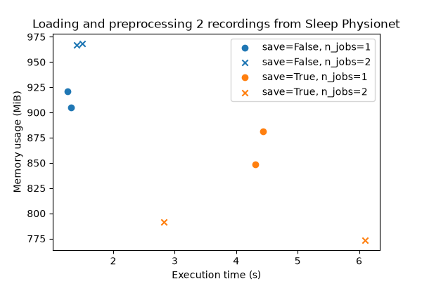

Note
Go to the end to download the full example code.
Benchmarking preprocessing with parallelization and serialization#
In this example, we compare the execution time and memory requirements of
preprocessing data with the parallelization and serialization functionalities
available in braindecode.preprocessing.preprocess().
We compare 4 cases:
Sequential, no serialization
Sequential, with serialization
Parallel, no serialization
Parallel, with serialization
Case 1 is the simplest approach, in which all recordings in a
braindecode.datasets.BaseConcatDataset are preprocessed one after the
other. In this scenario, braindecode.preprocessing.preprocess() acts
inplace, which means memory usage will likely stay stable (depending on the
preprocessing operations) if recordings have been preloaded. However, two
potential issues arise when working with large datasets: (1) if recordings have
not been preloaded before preprocessing, preprocess() will need to load them
and keep them in memory, in which case memory can become a bottleneck, and (2)
sequential preprocessing can take a considerable amount of time to run when
working with many recordings.
A solution to the first issue (memory usage) is to save the preprocessed data
to a file so it can be cleared from memory before moving on to the next
recording (case 2). The recordings can then be reloaded with preload=False
once they have all been saved to disk. This enables using the lazy loading
capabilities of braindecode.datasets.BaseConcatDataset and avoids
potential memory bottlenecks. The downside is that the writing to disk can take
some time and of course requires disk space.
A solution to the second issue (slow preprocessing) is to parallelize the preprocessing over multiple cores whenever possible (case 3). This can speed up preprocessing significantly. However, this approach will increase memory usage because of the way parallelization is implemented internally (with joblib, copies of (part of) the data must be made when sending arguments to parallel processes).
Finally, case 4 (combining parallelization and serialization) is likely to be both fast and memory efficient. As shown in this example, this remains a tradeoff though, and the selected configuration should depend on the size of the dataset and the specific operations applied to the recordings.
# Authors: Hubert Banville <hubert.jbanville@gmail.com>
#
# License: BSD (3-clause)
import tempfile
import time
from itertools import product
import matplotlib.pyplot as plt
import pandas as pd
from memory_profiler import memory_usage
from sklearn.preprocessing import scale
from braindecode.datasets import SleepPhysionet
from braindecode.preprocessing import (
Preprocessor,
create_fixed_length_windows,
preprocess,
)
We create a function that goes through the usual three steps of data
preparation: (1) data loading, (2) continuous data preprocessing,
(3) windowing and (4) windowed data preprocessing. We use the
braindecode.datasets.SleepPhysionet dataset for testing purposes.
def prepare_data(n_recs, save, preload, n_jobs):
if save:
tmp_dir = tempfile.TemporaryDirectory()
save_dir = tmp_dir.name
else:
save_dir = None
# (1) Load the data
concat_ds = SleepPhysionet(
subject_ids=range(n_recs), recording_ids=[1], crop_wake_mins=30, preload=preload
)
sfreq = concat_ds.datasets[0].raw.info["sfreq"]
# (2) Preprocess the continuous data
preprocessors = [
Preprocessor("crop", tmin=10),
Preprocessor("filter", l_freq=None, h_freq=30),
]
preprocess(
concat_ds, preprocessors, save_dir=save_dir, overwrite=True, n_jobs=n_jobs
)
# (3) Window the data
windows_ds = create_fixed_length_windows(
concat_ds,
0,
None,
int(30 * sfreq),
int(30 * sfreq),
on_last_window="drop",
preload=preload,
n_jobs=n_jobs,
)
# Preprocess the windowed data
preprocessors = [Preprocessor(scale, channel_wise=True)]
preprocess(
windows_ds, preprocessors, save_dir=save_dir, overwrite=True, n_jobs=n_jobs
)
Next, we can run our function and measure its run time and peak memory usage for each one of our 4 cases above. We call the function multiple times with each configuration to get better estimates.
Note
To better characterize the run time vs. memory usage tradeoff for your specific configuration (as this will differ based on available hardware, data size and preprocessing operations), we recommend adapting this example to your use case and running it on your machine.
n_repets = 2 # Number of repetitions
all_n_recs = 2 # Number of recordings to load and preprocess
all_n_jobs = [1, 2] # Number of parallel processes
results = list()
for _, n_recs, save, n_jobs in product(
range(n_repets), [all_n_recs], [True, False], all_n_jobs
):
start = time.time()
mem = max(memory_usage(proc=(prepare_data, [n_recs, save, False, n_jobs], {})))
time_taken = time.time() - start
results.append(
{
"n_recs": n_recs,
"max_mem": mem,
"save": save,
"n_jobs": n_jobs,
"time": time_taken,
}
)
0%| | 0.00/48.3M [00:00<?, ?B/s]
0%| | 66.6k/48.3M [00:00<01:25, 562kB/s]
0%| | 124k/48.3M [00:00<02:29, 323kB/s]
0%|▏ | 239k/48.3M [00:00<01:24, 572kB/s]
1%|▎ | 310k/48.3M [00:00<01:33, 515kB/s]
1%|▎ | 394k/48.3M [00:00<01:23, 572kB/s]
1%|▎ | 460k/48.3M [00:00<01:25, 560kB/s]
1%|▍ | 520k/48.3M [00:00<01:28, 539kB/s]
1%|▍ | 578k/48.3M [00:01<01:34, 508kB/s]
1%|▌ | 631k/48.3M [00:01<01:38, 484kB/s]
1%|▌ | 681k/48.3M [00:01<01:40, 473kB/s]
2%|▌ | 729k/48.3M [00:01<01:41, 469kB/s]
2%|▋ | 777k/48.3M [00:01<01:41, 469kB/s]
2%|▋ | 828k/48.3M [00:01<01:45, 450kB/s]
2%|▋ | 894k/48.3M [00:01<01:40, 474kB/s]
2%|▊ | 959k/48.3M [00:01<01:34, 502kB/s]
2%|▊ | 1.03M/48.3M [00:02<01:30, 521kB/s]
2%|▊ | 1.09M/48.3M [00:02<01:28, 534kB/s]
2%|▉ | 1.16M/48.3M [00:02<01:29, 528kB/s]
3%|▉ | 1.21M/48.3M [00:02<01:28, 532kB/s]
3%|▉ | 1.27M/48.3M [00:02<01:30, 518kB/s]
3%|█ | 1.34M/48.3M [00:02<01:29, 526kB/s]
3%|█ | 1.40M/48.3M [00:02<01:28, 529kB/s]
3%|█▏ | 1.47M/48.3M [00:02<01:29, 523kB/s]
3%|█▏ | 1.53M/48.3M [00:02<01:27, 538kB/s]
3%|█▎ | 1.60M/48.3M [00:03<01:26, 540kB/s]
3%|█▎ | 1.66M/48.3M [00:03<01:30, 514kB/s]
4%|█▎ | 1.72M/48.3M [00:03<01:30, 514kB/s]
4%|█▍ | 1.78M/48.3M [00:03<01:33, 498kB/s]
4%|█▍ | 1.84M/48.3M [00:03<01:31, 506kB/s]
4%|█▍ | 1.90M/48.3M [00:03<01:33, 498kB/s]
4%|█▌ | 1.95M/48.3M [00:03<01:37, 475kB/s]
4%|█▌ | 2.00M/48.3M [00:03<01:44, 444kB/s]
4%|█▌ | 2.04M/48.3M [00:04<01:46, 435kB/s]
4%|█▋ | 2.09M/48.3M [00:04<01:47, 431kB/s]
4%|█▋ | 2.16M/48.3M [00:04<01:41, 455kB/s]
5%|█▋ | 2.22M/48.3M [00:04<01:37, 475kB/s]
5%|█▊ | 2.29M/48.3M [00:04<01:31, 504kB/s]
5%|█▊ | 2.35M/48.3M [00:04<01:28, 520kB/s]
5%|█▉ | 2.42M/48.3M [00:04<01:35, 481kB/s]
5%|█▉ | 2.50M/48.3M [00:04<01:26, 527kB/s]
5%|██ | 2.55M/48.3M [00:05<01:27, 523kB/s]
5%|██ | 2.61M/48.3M [00:05<01:30, 506kB/s]
6%|██ | 2.68M/48.3M [00:05<01:28, 515kB/s]
6%|██▏ | 2.75M/48.3M [00:05<01:27, 521kB/s]
6%|██▏ | 2.81M/48.3M [00:05<01:25, 533kB/s]
6%|██▎ | 2.88M/48.3M [00:05<01:24, 536kB/s]
6%|██▎ | 2.94M/48.3M [00:05<01:26, 522kB/s]
6%|██▎ | 3.00M/48.3M [00:05<01:28, 510kB/s]
6%|██▍ | 3.05M/48.3M [00:06<01:29, 508kB/s]
6%|██▍ | 3.11M/48.3M [00:06<01:27, 519kB/s]
7%|██▍ | 3.18M/48.3M [00:06<01:26, 520kB/s]
7%|██▌ | 3.25M/48.3M [00:06<01:27, 516kB/s]
7%|██▌ | 3.31M/48.3M [00:06<01:23, 539kB/s]
7%|██▋ | 3.38M/48.3M [00:06<01:21, 555kB/s]
7%|██▋ | 3.44M/48.3M [00:06<01:21, 550kB/s]
7%|██▋ | 3.50M/48.3M [00:06<01:31, 488kB/s]
7%|██▊ | 3.57M/48.3M [00:07<01:30, 494kB/s]
7%|██▊ | 3.62M/48.3M [00:07<01:43, 430kB/s]
8%|██▉ | 3.67M/48.3M [00:07<01:47, 414kB/s]
8%|██▉ | 3.71M/48.3M [00:07<01:56, 382kB/s]
8%|██▉ | 3.76M/48.3M [00:07<01:54, 388kB/s]
8%|██▉ | 3.81M/48.3M [00:07<01:49, 405kB/s]
8%|███ | 3.87M/48.3M [00:07<01:40, 444kB/s]
8%|███ | 3.91M/48.3M [00:07<01:39, 448kB/s]
8%|███ | 3.97M/48.3M [00:08<01:37, 456kB/s]
8%|███▏ | 4.04M/48.3M [00:08<01:31, 485kB/s]
8%|███▏ | 4.11M/48.3M [00:08<01:28, 498kB/s]
9%|███▎ | 4.16M/48.3M [00:08<01:29, 496kB/s]
9%|███▎ | 4.22M/48.3M [00:08<01:26, 510kB/s]
9%|███▎ | 4.29M/48.3M [00:08<01:27, 506kB/s]
9%|███▍ | 4.35M/48.3M [00:08<01:22, 535kB/s]
9%|███▍ | 4.41M/48.3M [00:08<01:21, 537kB/s]
9%|███▌ | 4.46M/48.3M [00:09<01:37, 450kB/s]
9%|███▌ | 4.55M/48.3M [00:09<01:21, 536kB/s]
10%|███▋ | 4.61M/48.3M [00:09<01:22, 533kB/s]
10%|███▋ | 4.68M/48.3M [00:09<01:20, 545kB/s]
10%|███▋ | 4.74M/48.3M [00:09<01:17, 559kB/s]
10%|███▊ | 4.80M/48.3M [00:09<01:17, 558kB/s]
10%|███▊ | 4.86M/48.3M [00:09<01:17, 561kB/s]
10%|███▊ | 4.92M/48.3M [00:09<01:15, 572kB/s]
10%|███▉ | 4.98M/48.3M [00:09<01:33, 461kB/s]
11%|███▉ | 5.08M/48.3M [00:10<01:17, 562kB/s]
11%|████ | 5.15M/48.3M [00:10<01:17, 554kB/s]
11%|████ | 5.21M/48.3M [00:10<01:17, 555kB/s]
11%|████▏ | 5.28M/48.3M [00:10<01:17, 555kB/s]
11%|████▏ | 5.34M/48.3M [00:10<01:17, 558kB/s]
11%|████▎ | 5.41M/48.3M [00:10<01:15, 569kB/s]
11%|████▎ | 5.47M/48.3M [00:10<01:15, 566kB/s]
11%|████▎ | 5.54M/48.3M [00:10<01:15, 567kB/s]
12%|████▍ | 5.60M/48.3M [00:11<01:18, 546kB/s]
12%|████▍ | 5.67M/48.3M [00:11<01:18, 545kB/s]
12%|████▌ | 5.74M/48.3M [00:11<01:17, 548kB/s]
12%|████▌ | 5.80M/48.3M [00:11<01:15, 560kB/s]
12%|████▌ | 5.87M/48.3M [00:11<01:16, 555kB/s]
12%|████▋ | 5.92M/48.3M [00:11<01:17, 548kB/s]
12%|████▋ | 5.98M/48.3M [00:11<01:19, 535kB/s]
12%|████▋ | 6.03M/48.3M [00:11<01:19, 530kB/s]
13%|████▊ | 6.09M/48.3M [00:11<01:25, 492kB/s]
13%|████▊ | 6.15M/48.3M [00:12<01:23, 503kB/s]
13%|████▉ | 6.22M/48.3M [00:12<01:21, 518kB/s]
13%|████▉ | 6.28M/48.3M [00:12<01:19, 527kB/s]
13%|████▉ | 6.35M/48.3M [00:12<01:17, 542kB/s]
13%|█████ | 6.42M/48.3M [00:12<01:17, 540kB/s]
13%|█████ | 6.48M/48.3M [00:12<01:17, 543kB/s]
14%|█████▏ | 6.55M/48.3M [00:12<01:13, 568kB/s]
14%|█████▏ | 6.62M/48.3M [00:12<01:16, 548kB/s]
14%|█████▎ | 6.69M/48.3M [00:13<01:16, 547kB/s]
14%|█████▎ | 6.75M/48.3M [00:13<01:15, 549kB/s]
14%|█████▎ | 6.82M/48.3M [00:13<01:13, 563kB/s]
14%|█████▍ | 6.88M/48.3M [00:13<01:12, 574kB/s]
14%|█████▍ | 6.95M/48.3M [00:13<01:11, 575kB/s]
14%|█████▌ | 7.01M/48.3M [00:13<01:17, 534kB/s]
15%|█████▌ | 7.08M/48.3M [00:13<01:15, 548kB/s]
15%|█████▌ | 7.14M/48.3M [00:13<01:18, 526kB/s]
15%|█████▋ | 7.21M/48.3M [00:14<01:17, 529kB/s]
15%|█████▋ | 7.28M/48.3M [00:14<01:18, 522kB/s]
15%|█████▊ | 7.34M/48.3M [00:14<01:16, 533kB/s]
15%|█████▊ | 7.41M/48.3M [00:14<01:13, 559kB/s]
15%|█████▊ | 7.47M/48.3M [00:14<01:14, 552kB/s]
16%|█████▉ | 7.54M/48.3M [00:14<01:11, 574kB/s]
16%|█████▉ | 7.60M/48.3M [00:14<01:09, 589kB/s]
16%|██████ | 7.66M/48.3M [00:14<01:19, 511kB/s]
16%|██████ | 7.74M/48.3M [00:14<01:12, 561kB/s]
16%|██████▏ | 7.81M/48.3M [00:15<01:12, 556kB/s]
16%|██████▏ | 7.87M/48.3M [00:15<01:11, 564kB/s]
16%|██████▏ | 7.94M/48.3M [00:15<01:10, 571kB/s]
17%|██████▎ | 8.00M/48.3M [00:15<01:10, 571kB/s]
17%|██████▎ | 8.07M/48.3M [00:15<01:09, 580kB/s]
17%|██████▍ | 8.14M/48.3M [00:15<01:09, 580kB/s]
17%|██████▍ | 8.20M/48.3M [00:15<01:09, 579kB/s]
17%|██████▍ | 8.27M/48.3M [00:15<01:22, 488kB/s]
17%|██████▌ | 8.37M/48.3M [00:16<01:06, 601kB/s]
17%|██████▋ | 8.43M/48.3M [00:16<01:08, 585kB/s]
18%|██████▋ | 8.50M/48.3M [00:16<01:08, 581kB/s]
18%|██████▋ | 8.56M/48.3M [00:16<01:08, 582kB/s]
18%|██████▊ | 8.63M/48.3M [00:16<01:09, 571kB/s]
18%|██████▊ | 8.69M/48.3M [00:16<01:10, 561kB/s]
18%|██████▊ | 8.74M/48.3M [00:16<01:11, 557kB/s]
18%|██████▉ | 8.80M/48.3M [00:16<01:31, 433kB/s]
18%|██████▉ | 8.85M/48.3M [00:17<01:35, 415kB/s]
18%|██████▉ | 8.89M/48.3M [00:17<01:38, 399kB/s]
19%|███████ | 8.95M/48.3M [00:17<01:33, 420kB/s]
19%|███████ | 8.99M/48.3M [00:17<01:33, 419kB/s]
19%|███████ | 9.05M/48.3M [00:17<01:31, 431kB/s]
19%|███████▏ | 9.12M/48.3M [00:17<01:23, 467kB/s]
19%|███████▏ | 9.18M/48.3M [00:17<01:19, 494kB/s]
19%|███████▎ | 9.25M/48.3M [00:17<01:16, 508kB/s]
19%|███████▎ | 9.32M/48.3M [00:18<01:12, 540kB/s]
19%|███████▎ | 9.38M/48.3M [00:18<01:10, 549kB/s]
20%|███████▍ | 9.45M/48.3M [00:18<01:07, 573kB/s]
20%|███████▍ | 9.53M/48.3M [00:18<01:04, 604kB/s]
20%|███████▌ | 9.59M/48.3M [00:18<01:03, 615kB/s]
20%|███████▌ | 9.68M/48.3M [00:18<01:01, 630kB/s]
20%|███████▋ | 9.77M/48.3M [00:18<00:57, 667kB/s]
20%|███████▋ | 9.83M/48.3M [00:18<00:58, 653kB/s]
20%|███████▊ | 9.90M/48.3M [00:18<01:08, 562kB/s]
21%|███████▊ | 9.97M/48.3M [00:19<01:05, 585kB/s]
21%|███████▉ | 10.0M/48.3M [00:19<01:06, 573kB/s]
21%|███████▉ | 10.1M/48.3M [00:19<01:06, 574kB/s]
21%|███████▉ | 10.2M/48.3M [00:19<01:06, 578kB/s]
21%|████████ | 10.2M/48.3M [00:19<01:04, 594kB/s]
21%|████████ | 10.3M/48.3M [00:19<01:00, 631kB/s]
21%|████████▏ | 10.4M/48.3M [00:19<01:02, 610kB/s]
22%|████████▏ | 10.4M/48.3M [00:19<01:04, 584kB/s]
22%|████████▎ | 10.5M/48.3M [00:19<01:03, 595kB/s]
22%|████████▎ | 10.6M/48.3M [00:20<01:06, 569kB/s]
22%|████████▎ | 10.6M/48.3M [00:20<01:11, 524kB/s]
22%|████████▍ | 10.7M/48.3M [00:20<01:11, 527kB/s]
22%|████████▍ | 10.7M/48.3M [00:20<01:13, 509kB/s]
22%|████████▍ | 10.8M/48.3M [00:20<01:15, 498kB/s]
22%|████████▌ | 10.9M/48.3M [00:20<01:16, 487kB/s]
23%|████████▌ | 10.9M/48.3M [00:20<01:16, 488kB/s]
23%|████████▌ | 11.0M/48.3M [00:20<01:21, 461kB/s]
23%|████████▋ | 11.0M/48.3M [00:21<01:16, 487kB/s]
23%|████████▋ | 11.1M/48.3M [00:21<01:14, 502kB/s]
23%|████████▊ | 11.2M/48.3M [00:21<01:09, 532kB/s]
23%|████████▊ | 11.2M/48.3M [00:21<01:09, 531kB/s]
23%|████████▊ | 11.3M/48.3M [00:21<01:15, 491kB/s]
23%|████████▉ | 11.3M/48.3M [00:21<01:15, 491kB/s]
24%|████████▉ | 11.4M/48.3M [00:21<01:12, 512kB/s]
24%|████████▉ | 11.4M/48.3M [00:21<01:11, 513kB/s]
24%|█████████ | 11.5M/48.3M [00:21<01:11, 518kB/s]
24%|█████████ | 11.6M/48.3M [00:22<01:10, 519kB/s]
24%|█████████▏ | 11.6M/48.3M [00:22<01:09, 532kB/s]
24%|█████████▏ | 11.7M/48.3M [00:22<01:20, 458kB/s]
24%|█████████▎ | 11.8M/48.3M [00:22<01:11, 509kB/s]
24%|█████████▎ | 11.8M/48.3M [00:22<01:10, 518kB/s]
25%|█████████▎ | 11.9M/48.3M [00:22<01:10, 520kB/s]
25%|█████████▍ | 11.9M/48.3M [00:22<01:14, 488kB/s]
25%|█████████▍ | 12.0M/48.3M [00:22<01:13, 493kB/s]
25%|█████████▍ | 12.1M/48.3M [00:23<01:10, 517kB/s]
25%|█████████▌ | 12.1M/48.3M [00:23<01:08, 526kB/s]
25%|█████████▌ | 12.2M/48.3M [00:23<01:14, 484kB/s]
25%|█████████▋ | 12.3M/48.3M [00:23<01:08, 525kB/s]
25%|█████████▋ | 12.3M/48.3M [00:23<01:10, 513kB/s]
26%|█████████▋ | 12.4M/48.3M [00:23<01:08, 523kB/s]
26%|█████████▊ | 12.5M/48.3M [00:23<01:07, 530kB/s]
26%|█████████▊ | 12.5M/48.3M [00:23<01:07, 529kB/s]
26%|█████████▉ | 12.6M/48.3M [00:24<01:05, 543kB/s]
26%|█████████▉ | 12.6M/48.3M [00:24<01:04, 551kB/s]
26%|█████████▉ | 12.7M/48.3M [00:24<01:06, 536kB/s]
26%|██████████ | 12.8M/48.3M [00:24<01:08, 516kB/s]
27%|██████████ | 12.8M/48.3M [00:24<01:08, 516kB/s]
27%|██████████ | 12.9M/48.3M [00:24<01:10, 502kB/s]
27%|██████████▏ | 12.9M/48.3M [00:24<01:09, 507kB/s]
27%|██████████▏ | 13.0M/48.3M [00:24<01:10, 502kB/s]
27%|██████████▎ | 13.0M/48.3M [00:25<01:14, 473kB/s]
27%|██████████▎ | 13.1M/48.3M [00:25<01:18, 451kB/s]
27%|██████████▎ | 13.1M/48.3M [00:25<01:21, 429kB/s]
27%|██████████▎ | 13.2M/48.3M [00:25<01:25, 413kB/s]
27%|██████████▍ | 13.2M/48.3M [00:25<01:19, 443kB/s]
28%|██████████▍ | 13.3M/48.3M [00:25<01:16, 458kB/s]
28%|██████████▍ | 13.4M/48.3M [00:25<01:18, 446kB/s]
28%|██████████▌ | 13.4M/48.3M [00:25<01:15, 465kB/s]
28%|██████████▌ | 13.5M/48.3M [00:25<01:16, 454kB/s]
28%|██████████▌ | 13.5M/48.3M [00:26<01:21, 427kB/s]
28%|██████████▋ | 13.6M/48.3M [00:26<01:13, 471kB/s]
28%|██████████▋ | 13.6M/48.3M [00:26<01:12, 479kB/s]
28%|██████████▊ | 13.7M/48.3M [00:26<01:12, 479kB/s]
28%|██████████▊ | 13.7M/48.3M [00:26<01:16, 452kB/s]
29%|██████████▊ | 13.8M/48.3M [00:26<01:21, 423kB/s]
29%|██████████▉ | 13.8M/48.3M [00:26<01:20, 429kB/s]
29%|██████████▉ | 13.9M/48.3M [00:26<01:27, 392kB/s]
29%|██████████▉ | 13.9M/48.3M [00:27<01:24, 406kB/s]
29%|███████████ | 14.0M/48.3M [00:27<01:19, 430kB/s]
29%|███████████ | 14.0M/48.3M [00:27<01:21, 421kB/s]
29%|███████████ | 14.1M/48.3M [00:27<01:20, 428kB/s]
29%|███████████ | 14.1M/48.3M [00:27<01:18, 438kB/s]
29%|███████████▏ | 14.2M/48.3M [00:27<01:11, 476kB/s]
29%|███████████▏ | 14.2M/48.3M [00:27<01:16, 445kB/s]
30%|███████████▎ | 14.3M/48.3M [00:27<01:09, 492kB/s]
30%|███████████▎ | 14.4M/48.3M [00:27<01:11, 477kB/s]
30%|███████████▎ | 14.4M/48.3M [00:28<01:14, 455kB/s]
30%|███████████▎ | 14.5M/48.3M [00:28<01:16, 442kB/s]
30%|███████████▍ | 14.5M/48.3M [00:28<01:14, 452kB/s]
30%|███████████▍ | 14.6M/48.3M [00:28<01:11, 475kB/s]
30%|███████████▌ | 14.6M/48.3M [00:28<01:08, 492kB/s]
30%|███████████▌ | 14.7M/48.3M [00:28<01:05, 516kB/s]
31%|███████████▌ | 14.8M/48.3M [00:28<01:04, 518kB/s]
31%|███████████▋ | 14.8M/48.3M [00:28<01:09, 480kB/s]
31%|███████████▋ | 14.9M/48.3M [00:29<01:04, 522kB/s]
31%|███████████▊ | 15.0M/48.3M [00:29<01:04, 518kB/s]
31%|███████████▊ | 15.0M/48.3M [00:29<01:07, 494kB/s]
31%|███████████▊ | 15.1M/48.3M [00:29<01:06, 503kB/s]
31%|███████████▉ | 15.1M/48.3M [00:29<01:04, 518kB/s]
31%|███████████▉ | 15.2M/48.3M [00:29<01:01, 534kB/s]
32%|████████████ | 15.3M/48.3M [00:29<00:59, 557kB/s]
32%|████████████ | 15.4M/48.3M [00:29<00:55, 592kB/s]
32%|████████████▏ | 15.4M/48.3M [00:30<00:54, 599kB/s]
32%|████████████▏ | 15.5M/48.3M [00:30<00:53, 617kB/s]
32%|████████████▏ | 15.6M/48.3M [00:30<00:53, 615kB/s]
32%|████████████▎ | 15.6M/48.3M [00:30<01:02, 526kB/s]
33%|████████████▍ | 15.8M/48.3M [00:30<00:50, 651kB/s]
33%|████████████▍ | 15.8M/48.3M [00:30<00:50, 647kB/s]
33%|████████████▍ | 15.9M/48.3M [00:30<00:50, 646kB/s]
33%|████████████▌ | 16.0M/48.3M [00:30<00:49, 648kB/s]
33%|████████████▌ | 16.0M/48.3M [00:30<00:50, 636kB/s]
33%|████████████▋ | 16.1M/48.3M [00:31<01:00, 532kB/s]
33%|████████████▋ | 16.2M/48.3M [00:31<00:51, 625kB/s]
34%|████████████▊ | 16.3M/48.3M [00:31<00:54, 594kB/s]
34%|████████████▊ | 16.3M/48.3M [00:31<00:54, 585kB/s]
34%|████████████▉ | 16.4M/48.3M [00:31<00:54, 587kB/s]
34%|████████████▉ | 16.5M/48.3M [00:31<00:53, 593kB/s]
34%|████████████▉ | 16.5M/48.3M [00:31<00:53, 597kB/s]
34%|█████████████ | 16.6M/48.3M [00:31<00:54, 587kB/s]
34%|█████████████ | 16.6M/48.3M [00:32<00:54, 580kB/s]
35%|█████████████▏ | 16.7M/48.3M [00:32<00:53, 589kB/s]
35%|█████████████▏ | 16.8M/48.3M [00:32<01:02, 502kB/s]
35%|█████████████▏ | 16.9M/48.3M [00:32<00:52, 598kB/s]
35%|█████████████▎ | 16.9M/48.3M [00:32<00:53, 589kB/s]
35%|█████████████▎ | 17.0M/48.3M [00:32<00:53, 583kB/s]
35%|█████████████▍ | 17.0M/48.3M [00:32<00:53, 581kB/s]
35%|█████████████▍ | 17.1M/48.3M [00:32<00:53, 588kB/s]
36%|█████████████▌ | 17.2M/48.3M [00:33<01:02, 502kB/s]
36%|█████████████▌ | 17.3M/48.3M [00:33<00:53, 577kB/s]
36%|█████████████▋ | 17.3M/48.3M [00:33<00:56, 550kB/s]
36%|█████████████▋ | 17.4M/48.3M [00:33<00:57, 540kB/s]
36%|█████████████▋ | 17.5M/48.3M [00:33<00:56, 542kB/s]
36%|█████████████▊ | 17.5M/48.3M [00:33<00:57, 540kB/s]
36%|█████████████▊ | 17.6M/48.3M [00:33<00:55, 551kB/s]
37%|█████████████▉ | 17.7M/48.3M [00:33<00:54, 563kB/s]
37%|█████████████▉ | 17.7M/48.3M [00:33<00:53, 572kB/s]
37%|█████████████▉ | 17.8M/48.3M [00:34<00:53, 571kB/s]
37%|██████████████ | 17.9M/48.3M [00:34<00:53, 573kB/s]
37%|██████████████ | 17.9M/48.3M [00:34<01:07, 452kB/s]
37%|██████████████▏ | 18.0M/48.3M [00:34<01:02, 488kB/s]
37%|██████████████▏ | 18.0M/48.3M [00:34<01:18, 384kB/s]
37%|██████████████▏ | 18.1M/48.3M [00:34<01:24, 356kB/s]
38%|██████████████▎ | 18.1M/48.3M [00:35<01:30, 335kB/s]
38%|██████████████▎ | 18.2M/48.3M [00:35<01:45, 287kB/s]
38%|██████████████▎ | 18.2M/48.3M [00:35<01:47, 281kB/s]
38%|██████████████▎ | 18.2M/48.3M [00:35<01:43, 291kB/s]
38%|██████████████▎ | 18.3M/48.3M [00:35<01:42, 294kB/s]
38%|██████████████▍ | 18.3M/48.3M [00:35<01:42, 292kB/s]
38%|██████████████▍ | 18.4M/48.3M [00:35<02:03, 243kB/s]
38%|██████████████▍ | 18.4M/48.3M [00:36<01:41, 294kB/s]
38%|██████████████▌ | 18.4M/48.3M [00:36<01:58, 252kB/s]
38%|██████████████▌ | 18.5M/48.3M [00:36<02:00, 248kB/s]
38%|██████████████▌ | 18.5M/48.3M [00:36<02:04, 239kB/s]
38%|██████████████▌ | 18.5M/48.3M [00:36<01:52, 264kB/s]
38%|██████████████▌ | 18.6M/48.3M [00:36<01:53, 262kB/s]
39%|██████████████▋ | 18.6M/48.3M [00:36<01:57, 253kB/s]
39%|██████████████▋ | 18.7M/48.3M [00:37<01:57, 253kB/s]
39%|██████████████▋ | 18.7M/48.3M [00:37<01:54, 258kB/s]
39%|██████████████▋ | 18.7M/48.3M [00:37<01:50, 268kB/s]
39%|██████████████▋ | 18.8M/48.3M [00:37<01:53, 261kB/s]
39%|██████████████▊ | 18.8M/48.3M [00:37<01:47, 274kB/s]
39%|██████████████▊ | 18.8M/48.3M [00:37<01:37, 302kB/s]
39%|██████████████▊ | 18.9M/48.3M [00:37<01:29, 330kB/s]
39%|██████████████▉ | 18.9M/48.3M [00:37<01:18, 376kB/s]
39%|██████████████▉ | 19.0M/48.3M [00:38<01:18, 372kB/s]
39%|██████████████▉ | 19.0M/48.3M [00:38<01:13, 401kB/s]
39%|██████████████▉ | 19.1M/48.3M [00:38<01:35, 306kB/s]
40%|███████████████ | 19.1M/48.3M [00:38<01:22, 355kB/s]
40%|███████████████ | 19.2M/48.3M [00:38<01:25, 342kB/s]
40%|███████████████ | 19.2M/48.3M [00:38<01:38, 297kB/s]
40%|███████████████▏ | 19.2M/48.3M [00:38<01:37, 299kB/s]
40%|███████████████▏ | 19.3M/48.3M [00:39<01:43, 280kB/s]
40%|███████████████▏ | 19.3M/48.3M [00:39<01:30, 320kB/s]
40%|███████████████▏ | 19.4M/48.3M [00:39<01:37, 296kB/s]
40%|███████████████▎ | 19.4M/48.3M [00:39<01:30, 321kB/s]
40%|███████████████▎ | 19.5M/48.3M [00:39<01:17, 373kB/s]
40%|███████████████▎ | 19.5M/48.3M [00:39<01:16, 377kB/s]
40%|███████████████▎ | 19.5M/48.3M [00:39<01:27, 331kB/s]
41%|███████████████▍ | 19.6M/48.3M [00:40<01:53, 254kB/s]
41%|███████████████▍ | 19.7M/48.3M [00:40<01:25, 335kB/s]
41%|███████████████▍ | 19.7M/48.3M [00:40<01:31, 311kB/s]
41%|███████████████▌ | 19.8M/48.3M [00:40<01:20, 355kB/s]
41%|███████████████▌ | 19.8M/48.3M [00:40<01:20, 353kB/s]
41%|███████████████▌ | 19.8M/48.3M [00:40<01:29, 320kB/s]
41%|███████████████▋ | 19.9M/48.3M [00:40<01:22, 346kB/s]
41%|███████████████▋ | 19.9M/48.3M [00:41<01:22, 344kB/s]
41%|███████████████▋ | 20.0M/48.3M [00:41<01:16, 371kB/s]
41%|███████████████▋ | 20.0M/48.3M [00:41<01:12, 392kB/s]
42%|███████████████▊ | 20.1M/48.3M [00:41<01:05, 430kB/s]
42%|███████████████▊ | 20.2M/48.3M [00:41<01:01, 457kB/s]
42%|███████████████▉ | 20.2M/48.3M [00:41<00:58, 480kB/s]
42%|███████████████▉ | 20.3M/48.3M [00:41<00:55, 501kB/s]
42%|████████████████ | 20.4M/48.3M [00:41<00:53, 524kB/s]
42%|████████████████ | 20.4M/48.3M [00:41<00:56, 490kB/s]
42%|████████████████ | 20.5M/48.3M [00:42<00:52, 526kB/s]
43%|████████████████▏ | 20.6M/48.3M [00:42<00:53, 518kB/s]
43%|████████████████▏ | 20.6M/48.3M [00:42<00:52, 525kB/s]
43%|████████████████▎ | 20.7M/48.3M [00:42<00:53, 522kB/s]
43%|████████████████▎ | 20.8M/48.3M [00:42<00:53, 512kB/s]
43%|████████████████▎ | 20.8M/48.3M [00:42<00:51, 530kB/s]
43%|████████████████▍ | 20.9M/48.3M [00:42<00:49, 553kB/s]
43%|████████████████▍ | 20.9M/48.3M [00:42<00:48, 567kB/s]
43%|████████████████▌ | 21.0M/48.3M [00:43<00:51, 535kB/s]
44%|████████████████▌ | 21.1M/48.3M [00:43<00:50, 543kB/s]
44%|████████████████▌ | 21.1M/48.3M [00:43<00:50, 543kB/s]
44%|████████████████▋ | 21.2M/48.3M [00:43<00:50, 539kB/s]
44%|████████████████▋ | 21.2M/48.3M [00:43<00:51, 521kB/s]
44%|████████████████▋ | 21.3M/48.3M [00:43<00:57, 467kB/s]
44%|████████████████▊ | 21.3M/48.3M [00:43<00:59, 457kB/s]
44%|████████████████▊ | 21.4M/48.3M [00:43<01:11, 378kB/s]
44%|████████████████▊ | 21.4M/48.3M [00:44<01:10, 379kB/s]
44%|████████████████▉ | 21.5M/48.3M [00:44<01:29, 301kB/s]
44%|████████████████▉ | 21.5M/48.3M [00:44<01:27, 306kB/s]
45%|████████████████▉ | 21.5M/48.3M [00:44<01:39, 268kB/s]
45%|████████████████▉ | 21.6M/48.3M [00:44<02:05, 212kB/s]
45%|████████████████▉ | 21.6M/48.3M [00:44<02:08, 209kB/s]
45%|████████████████▉ | 21.6M/48.3M [00:45<02:15, 197kB/s]
45%|█████████████████ | 21.6M/48.3M [00:45<02:41, 166kB/s]
45%|█████████████████ | 21.7M/48.3M [00:45<02:45, 161kB/s]
45%|█████████████████ | 21.7M/48.3M [00:45<02:33, 174kB/s]
45%|█████████████████ | 21.7M/48.3M [00:45<02:28, 179kB/s]
45%|█████████████████ | 21.8M/48.3M [00:45<01:56, 228kB/s]
45%|█████████████████▏ | 21.8M/48.3M [00:45<01:47, 247kB/s]
45%|█████████████████▏ | 21.8M/48.3M [00:46<01:34, 281kB/s]
45%|█████████████████▏ | 21.9M/48.3M [00:46<01:23, 316kB/s]
45%|█████████████████▎ | 22.0M/48.3M [00:46<01:11, 367kB/s]
46%|█████████████████▎ | 22.0M/48.3M [00:46<01:11, 369kB/s]
46%|█████████████████▎ | 22.0M/48.3M [00:46<01:06, 396kB/s]
46%|█████████████████▍ | 22.1M/48.3M [00:46<01:01, 427kB/s]
46%|█████████████████▍ | 22.2M/48.3M [00:46<00:56, 467kB/s]
46%|█████████████████▍ | 22.2M/48.3M [00:46<00:52, 494kB/s]
46%|█████████████████▌ | 22.3M/48.3M [00:46<00:51, 507kB/s]
46%|█████████████████▌ | 22.4M/48.3M [00:47<00:55, 471kB/s]
46%|█████████████████▋ | 22.5M/48.3M [00:47<00:50, 509kB/s]
47%|█████████████████▋ | 22.5M/48.3M [00:47<00:49, 517kB/s]
47%|█████████████████▋ | 22.6M/48.3M [00:47<00:49, 525kB/s]
47%|█████████████████▊ | 22.6M/48.3M [00:47<00:48, 533kB/s]
47%|█████████████████▊ | 22.7M/48.3M [00:47<00:47, 543kB/s]
47%|█████████████████▉ | 22.8M/48.3M [00:47<00:45, 557kB/s]
47%|█████████████████▉ | 22.8M/48.3M [00:47<00:45, 556kB/s]
47%|█████████████████▉ | 22.9M/48.3M [00:48<00:47, 533kB/s]
47%|██████████████████ | 23.0M/48.3M [00:48<00:53, 476kB/s]
48%|██████████████████ | 23.0M/48.3M [00:48<00:53, 471kB/s]
48%|██████████████████▏ | 23.1M/48.3M [00:48<00:53, 473kB/s]
48%|██████████████████▏ | 23.1M/48.3M [00:48<00:54, 459kB/s]
48%|██████████████████▏ | 23.2M/48.3M [00:48<00:52, 478kB/s]
48%|██████████████████▎ | 23.2M/48.3M [00:48<00:49, 506kB/s]
48%|██████████████████▎ | 23.3M/48.3M [00:48<00:48, 517kB/s]
48%|██████████████████▎ | 23.4M/48.3M [00:49<00:47, 529kB/s]
48%|██████████████████▍ | 23.4M/48.3M [00:49<00:47, 524kB/s]
49%|██████████████████▍ | 23.5M/48.3M [00:49<00:46, 539kB/s]
49%|██████████████████▌ | 23.6M/48.3M [00:49<00:45, 539kB/s]
49%|██████████████████▌ | 23.6M/48.3M [00:49<00:51, 478kB/s]
49%|██████████████████▋ | 23.7M/48.3M [00:49<00:42, 575kB/s]
49%|██████████████████▋ | 23.8M/48.3M [00:49<00:43, 563kB/s]
49%|██████████████████▊ | 23.9M/48.3M [00:49<00:41, 587kB/s]
49%|██████████████████▊ | 23.9M/48.3M [00:50<00:41, 591kB/s]
50%|██████████████████▊ | 24.0M/48.3M [00:50<00:41, 586kB/s]
50%|██████████████████▉ | 24.1M/48.3M [00:50<00:41, 581kB/s]
50%|██████████████████▉ | 24.1M/48.3M [00:50<00:42, 576kB/s]
50%|███████████████████ | 24.2M/48.3M [00:50<00:41, 576kB/s]
50%|███████████████████ | 24.2M/48.3M [00:50<00:42, 567kB/s]
50%|███████████████████ | 24.3M/48.3M [00:50<00:43, 552kB/s]
50%|███████████████████▏ | 24.4M/48.3M [00:50<00:43, 545kB/s]
51%|███████████████████▏ | 24.4M/48.3M [00:50<00:43, 546kB/s]
51%|███████████████████▎ | 24.5M/48.3M [00:51<00:43, 545kB/s]
51%|███████████████████▎ | 24.6M/48.3M [00:51<00:43, 541kB/s]
51%|███████████████████▎ | 24.6M/48.3M [00:51<00:46, 514kB/s]
51%|███████████████████▍ | 24.7M/48.3M [00:51<00:46, 514kB/s]
51%|███████████████████▍ | 24.7M/48.3M [00:51<00:47, 493kB/s]
51%|███████████████████▍ | 24.8M/48.3M [00:51<00:49, 478kB/s]
51%|███████████████████▌ | 24.8M/48.3M [00:51<00:48, 480kB/s]
52%|███████████████████▌ | 24.9M/48.3M [00:51<00:47, 496kB/s]
52%|███████████████████▋ | 25.0M/48.3M [00:52<00:46, 505kB/s]
52%|███████████████████▋ | 25.0M/48.3M [00:52<00:44, 526kB/s]
52%|███████████████████▋ | 25.1M/48.3M [00:52<00:41, 556kB/s]
52%|███████████████████▊ | 25.2M/48.3M [00:52<00:40, 566kB/s]
52%|███████████████████▊ | 25.3M/48.3M [00:52<00:38, 604kB/s]
52%|███████████████████▉ | 25.3M/48.3M [00:52<00:39, 583kB/s]
53%|███████████████████▉ | 25.4M/48.3M [00:52<00:37, 605kB/s]
53%|████████████████████ | 25.5M/48.3M [00:52<00:39, 583kB/s]
53%|████████████████████ | 25.5M/48.3M [00:52<00:39, 580kB/s]
53%|████████████████████▏ | 25.6M/48.3M [00:53<00:39, 569kB/s]
53%|████████████████████▏ | 25.7M/48.3M [00:53<00:40, 566kB/s]
53%|████████████████████▏ | 25.7M/48.3M [00:53<00:39, 567kB/s]
53%|████████████████████▎ | 25.8M/48.3M [00:53<00:39, 569kB/s]
53%|████████████████████▎ | 25.9M/48.3M [00:53<00:44, 504kB/s]
54%|████████████████████▍ | 25.9M/48.3M [00:53<00:39, 567kB/s]
54%|████████████████████▍ | 26.0M/48.3M [00:53<00:40, 549kB/s]
54%|████████████████████▍ | 26.1M/48.3M [00:53<00:43, 518kB/s]
54%|████████████████████▌ | 26.1M/48.3M [00:54<00:43, 514kB/s]
54%|████████████████████▌ | 26.2M/48.3M [00:54<00:42, 516kB/s]
54%|████████████████████▋ | 26.2M/48.3M [00:54<00:44, 502kB/s]
54%|████████████████████▋ | 26.3M/48.3M [00:54<00:41, 535kB/s]
55%|████████████████████▋ | 26.4M/48.3M [00:54<00:42, 518kB/s]
55%|████████████████████▊ | 26.4M/48.3M [00:54<00:45, 482kB/s]
55%|████████████████████▊ | 26.5M/48.3M [00:54<00:48, 455kB/s]
55%|████████████████████▊ | 26.5M/48.3M [00:54<00:43, 503kB/s]
55%|████████████████████▉ | 26.6M/48.3M [00:55<00:43, 503kB/s]
55%|████████████████████▉ | 26.6M/48.3M [00:55<00:43, 495kB/s]
55%|█████████████████████ | 26.7M/48.3M [00:55<00:41, 527kB/s]
55%|█████████████████████ | 26.8M/48.3M [00:55<00:40, 534kB/s]
56%|█████████████████████ | 26.8M/48.3M [00:55<00:40, 527kB/s]
56%|█████████████████████▏ | 26.9M/48.3M [00:55<00:39, 549kB/s]
56%|█████████████████████▏ | 27.0M/48.3M [00:55<00:37, 565kB/s]
56%|█████████████████████▎ | 27.0M/48.3M [00:55<00:36, 577kB/s]
56%|█████████████████████▎ | 27.1M/48.3M [00:55<00:36, 588kB/s]
56%|█████████████████████▎ | 27.2M/48.3M [00:56<00:35, 596kB/s]
56%|█████████████████████▍ | 27.2M/48.3M [00:56<00:36, 585kB/s]
56%|█████████████████████▍ | 27.3M/48.3M [00:56<00:36, 575kB/s]
57%|█████████████████████▌ | 27.4M/48.3M [00:56<00:41, 511kB/s]
57%|█████████████████████▌ | 27.5M/48.3M [00:56<00:37, 561kB/s]
57%|█████████████████████▋ | 27.5M/48.3M [00:56<00:37, 561kB/s]
57%|█████████████████████▋ | 27.6M/48.3M [00:56<00:36, 574kB/s]
57%|█████████████████████▋ | 27.7M/48.3M [00:56<00:35, 579kB/s]
57%|█████████████████████▊ | 27.7M/48.3M [00:57<00:36, 558kB/s]
58%|█████████████████████▊ | 27.8M/48.3M [00:57<00:38, 536kB/s]
58%|█████████████████████▉ | 27.9M/48.3M [00:57<00:38, 533kB/s]
58%|█████████████████████▉ | 27.9M/48.3M [00:57<00:40, 502kB/s]
58%|█████████████████████▉ | 28.0M/48.3M [00:57<00:40, 504kB/s]
58%|██████████████████████ | 28.0M/48.3M [00:57<00:41, 485kB/s]
58%|██████████████████████ | 28.1M/48.3M [00:57<00:39, 507kB/s]
58%|██████████████████████ | 28.1M/48.3M [00:57<00:38, 526kB/s]
58%|██████████████████████▏ | 28.2M/48.3M [00:58<00:36, 550kB/s]
59%|██████████████████████▏ | 28.3M/48.3M [00:58<00:35, 567kB/s]
59%|██████████████████████▎ | 28.4M/48.3M [00:58<00:35, 571kB/s]
59%|██████████████████████▎ | 28.4M/48.3M [00:58<00:34, 574kB/s]
59%|██████████████████████▍ | 28.5M/48.3M [00:58<00:35, 562kB/s]
59%|██████████████████████▍ | 28.6M/48.3M [00:58<00:35, 556kB/s]
59%|██████████████████████▍ | 28.6M/48.3M [00:58<00:47, 417kB/s]
59%|██████████████████████▌ | 28.7M/48.3M [00:58<00:33, 586kB/s]
60%|██████████████████████▋ | 28.8M/48.3M [00:59<00:33, 587kB/s]
60%|██████████████████████▋ | 28.9M/48.3M [00:59<00:40, 476kB/s]
60%|██████████████████████▊ | 28.9M/48.3M [00:59<00:38, 500kB/s]
60%|██████████████████████▊ | 29.0M/48.3M [00:59<00:37, 511kB/s]
60%|██████████████████████▊ | 29.1M/48.3M [00:59<00:38, 495kB/s]
60%|██████████████████████▉ | 29.1M/48.3M [00:59<00:38, 496kB/s]
60%|██████████████████████▉ | 29.2M/48.3M [00:59<00:37, 507kB/s]
61%|███████████████████████ | 29.3M/48.3M [01:00<00:37, 511kB/s]
61%|███████████████████████ | 29.3M/48.3M [01:00<00:35, 535kB/s]
61%|███████████████████████ | 29.4M/48.3M [01:00<00:37, 509kB/s]
61%|███████████████████████▏ | 29.5M/48.3M [01:00<00:35, 537kB/s]
61%|███████████████████████▏ | 29.5M/48.3M [01:00<00:35, 537kB/s]
61%|███████████████████████▎ | 29.6M/48.3M [01:00<00:35, 532kB/s]
61%|███████████████████████▎ | 29.7M/48.3M [01:00<00:33, 560kB/s]
61%|███████████████████████▎ | 29.7M/48.3M [01:00<00:33, 563kB/s]
62%|███████████████████████▍ | 29.8M/48.3M [01:00<00:34, 542kB/s]
62%|███████████████████████▍ | 29.8M/48.3M [01:01<00:34, 541kB/s]
62%|███████████████████████▌ | 29.9M/48.3M [01:01<00:37, 493kB/s]
62%|███████████████████████▌ | 30.0M/48.3M [01:01<00:33, 552kB/s]
62%|███████████████████████▌ | 30.0M/48.3M [01:01<00:34, 526kB/s]
62%|███████████████████████▋ | 30.1M/48.3M [01:01<00:33, 552kB/s]
62%|███████████████████████▋ | 30.2M/48.3M [01:01<00:39, 455kB/s]
63%|███████████████████████▊ | 30.3M/48.3M [01:01<00:33, 540kB/s]
63%|███████████████████████▊ | 30.3M/48.3M [01:01<00:34, 524kB/s]
63%|███████████████████████▊ | 30.4M/48.3M [01:02<00:34, 524kB/s]
63%|███████████████████████▉ | 30.4M/48.3M [01:02<00:36, 492kB/s]
63%|███████████████████████▉ | 30.5M/48.3M [01:02<00:36, 483kB/s]
63%|████████████████████████ | 30.5M/48.3M [01:02<00:41, 432kB/s]
63%|████████████████████████ | 30.6M/48.3M [01:02<00:35, 501kB/s]
63%|████████████████████████ | 30.7M/48.3M [01:02<00:35, 502kB/s]
64%|████████████████████████▏ | 30.7M/48.3M [01:02<00:36, 489kB/s]
64%|████████████████████████▏ | 30.8M/48.3M [01:02<00:38, 459kB/s]
64%|████████████████████████▏ | 30.8M/48.3M [01:03<00:37, 466kB/s]
64%|████████████████████████▎ | 30.9M/48.3M [01:03<00:39, 441kB/s]
64%|████████████████████████▎ | 31.0M/48.3M [01:03<00:35, 486kB/s]
64%|████████████████████████▍ | 31.0M/48.3M [01:03<00:37, 464kB/s]
64%|████████████████████████▍ | 31.1M/48.3M [01:03<00:36, 471kB/s]
64%|████████████████████████▍ | 31.1M/48.3M [01:03<00:41, 420kB/s]
64%|████████████████████████▌ | 31.2M/48.3M [01:03<00:40, 427kB/s]
65%|████████████████████████▌ | 31.2M/48.3M [01:04<00:39, 429kB/s]
65%|████████████████████████▌ | 31.3M/48.3M [01:04<00:38, 446kB/s]
65%|████████████████████████▋ | 31.3M/48.3M [01:04<00:39, 429kB/s]
65%|████████████████████████▋ | 31.4M/48.3M [01:04<00:43, 392kB/s]
65%|████████████████████████▋ | 31.4M/48.3M [01:04<00:46, 364kB/s]
65%|████████████████████████▊ | 31.5M/48.3M [01:04<00:41, 406kB/s]
65%|████████████████████████▊ | 31.5M/48.3M [01:04<00:45, 369kB/s]
65%|████████████████████████▊ | 31.6M/48.3M [01:04<00:45, 370kB/s]
65%|████████████████████████▊ | 31.6M/48.3M [01:05<00:43, 386kB/s]
66%|████████████████████████▉ | 31.7M/48.3M [01:05<00:39, 425kB/s]
66%|████████████████████████▉ | 31.7M/48.3M [01:05<00:41, 404kB/s]
66%|████████████████████████▉ | 31.8M/48.3M [01:05<00:38, 429kB/s]
66%|█████████████████████████ | 31.8M/48.3M [01:05<00:37, 437kB/s]
66%|█████████████████████████ | 31.9M/48.3M [01:05<00:37, 444kB/s]
66%|█████████████████████████ | 31.9M/48.3M [01:05<00:34, 476kB/s]
66%|█████████████████████████▏ | 32.0M/48.3M [01:05<00:36, 445kB/s]
66%|█████████████████████████▏ | 32.0M/48.3M [01:06<00:47, 341kB/s]
66%|█████████████████████████▏ | 32.1M/48.3M [01:06<00:43, 369kB/s]
67%|█████████████████████████▎ | 32.1M/48.3M [01:06<00:43, 368kB/s]
67%|█████████████████████████▎ | 32.2M/48.3M [01:06<00:43, 369kB/s]
67%|█████████████████████████▎ | 32.2M/48.3M [01:06<00:48, 334kB/s]
67%|█████████████████████████▎ | 32.3M/48.3M [01:06<00:44, 360kB/s]
67%|█████████████████████████▍ | 32.3M/48.3M [01:06<00:43, 368kB/s]
67%|█████████████████████████▍ | 32.4M/48.3M [01:06<00:40, 391kB/s]
67%|█████████████████████████▍ | 32.4M/48.3M [01:07<00:37, 428kB/s]
67%|█████████████████████████▌ | 32.5M/48.3M [01:07<00:36, 437kB/s]
67%|█████████████████████████▌ | 32.5M/48.3M [01:07<00:40, 391kB/s]
68%|█████████████████████████▋ | 32.6M/48.3M [01:07<00:32, 479kB/s]
68%|█████████████████████████▋ | 32.7M/48.3M [01:07<00:34, 452kB/s]
68%|█████████████████████████▋ | 32.7M/48.3M [01:07<00:34, 449kB/s]
68%|█████████████████████████▊ | 32.8M/48.3M [01:07<00:34, 454kB/s]
68%|█████████████████████████▊ | 32.9M/48.3M [01:07<00:32, 471kB/s]
68%|█████████████████████████▉ | 32.9M/48.3M [01:08<00:32, 478kB/s]
68%|█████████████████████████▉ | 33.0M/48.3M [01:08<00:32, 474kB/s]
68%|█████████████████████████▉ | 33.0M/48.3M [01:08<00:30, 506kB/s]
68%|██████████████████████████ | 33.1M/48.3M [01:08<00:29, 514kB/s]
69%|██████████████████████████ | 33.1M/48.3M [01:08<00:29, 516kB/s]
69%|██████████████████████████ | 33.2M/48.3M [01:08<00:30, 494kB/s]
69%|██████████████████████████▏ | 33.3M/48.3M [01:08<00:31, 481kB/s]
69%|██████████████████████████▏ | 33.3M/48.3M [01:08<00:30, 491kB/s]
69%|██████████████████████████▏ | 33.4M/48.3M [01:09<00:29, 507kB/s]
69%|██████████████████████████▎ | 33.4M/48.3M [01:09<00:28, 518kB/s]
69%|██████████████████████████▎ | 33.5M/48.3M [01:09<00:28, 528kB/s]
69%|██████████████████████████▍ | 33.6M/48.3M [01:09<00:27, 545kB/s]
70%|██████████████████████████▍ | 33.6M/48.3M [01:09<00:26, 558kB/s]
70%|██████████████████████████▍ | 33.7M/48.3M [01:09<00:29, 496kB/s]
70%|██████████████████████████▌ | 33.8M/48.3M [01:09<00:28, 511kB/s]
70%|██████████████████████████▌ | 33.8M/48.3M [01:09<00:27, 523kB/s]
70%|██████████████████████████▋ | 33.9M/48.3M [01:10<00:33, 437kB/s]
70%|██████████████████████████▋ | 33.9M/48.3M [01:10<00:30, 474kB/s]
70%|██████████████████████████▋ | 34.0M/48.3M [01:10<00:31, 460kB/s]
70%|██████████████████████████▊ | 34.0M/48.3M [01:10<00:32, 441kB/s]
71%|██████████████████████████▊ | 34.1M/48.3M [01:10<00:33, 429kB/s]
71%|██████████████████████████▊ | 34.2M/48.3M [01:10<00:31, 444kB/s]
71%|██████████████████████████▉ | 34.2M/48.3M [01:10<00:29, 472kB/s]
71%|██████████████████████████▉ | 34.3M/48.3M [01:10<00:28, 495kB/s]
71%|███████████████████████████ | 34.4M/48.3M [01:10<00:27, 506kB/s]
71%|███████████████████████████ | 34.4M/48.3M [01:11<00:26, 517kB/s]
71%|███████████████████████████ | 34.5M/48.3M [01:11<00:27, 508kB/s]
71%|███████████████████████████▏ | 34.5M/48.3M [01:11<00:27, 504kB/s]
72%|███████████████████████████▏ | 34.6M/48.3M [01:11<00:27, 509kB/s]
72%|███████████████████████████▏ | 34.6M/48.3M [01:11<00:26, 516kB/s]
72%|███████████████████████████▎ | 34.7M/48.3M [01:11<00:26, 520kB/s]
72%|███████████████████████████▎ | 34.8M/48.3M [01:11<00:25, 531kB/s]
72%|███████████████████████████▍ | 34.8M/48.3M [01:11<00:25, 540kB/s]
72%|███████████████████████████▍ | 34.9M/48.3M [01:12<00:26, 512kB/s]
72%|███████████████████████████▍ | 34.9M/48.3M [01:12<00:26, 499kB/s]
72%|███████████████████████████▌ | 35.0M/48.3M [01:12<00:27, 484kB/s]
72%|███████████████████████████▌ | 35.0M/48.3M [01:12<00:27, 479kB/s]
73%|███████████████████████████▌ | 35.1M/48.3M [01:12<00:27, 489kB/s]
73%|███████████████████████████▋ | 35.2M/48.3M [01:12<00:26, 506kB/s]
73%|███████████████████████████▋ | 35.2M/48.3M [01:12<00:25, 524kB/s]
73%|███████████████████████████▊ | 35.3M/48.3M [01:12<00:24, 527kB/s]
73%|███████████████████████████▊ | 35.4M/48.3M [01:12<00:24, 519kB/s]
73%|███████████████████████████▊ | 35.4M/48.3M [01:13<00:25, 513kB/s]
73%|███████████████████████████▉ | 35.5M/48.3M [01:13<00:25, 507kB/s]
73%|███████████████████████████▉ | 35.5M/48.3M [01:13<00:26, 481kB/s]
74%|███████████████████████████▉ | 35.6M/48.3M [01:13<00:25, 495kB/s]
74%|████████████████████████████ | 35.6M/48.3M [01:13<00:26, 481kB/s]
74%|████████████████████████████ | 35.7M/48.3M [01:13<00:26, 471kB/s]
74%|████████████████████████████ | 35.8M/48.3M [01:13<00:24, 512kB/s]
74%|████████████████████████████▏ | 35.8M/48.3M [01:13<00:26, 467kB/s]
74%|████████████████████████████▏ | 35.9M/48.3M [01:14<00:25, 484kB/s]
74%|████████████████████████████▎ | 36.0M/48.3M [01:14<00:24, 509kB/s]
75%|████████████████████████████▎ | 36.0M/48.3M [01:14<00:23, 515kB/s]
75%|████████████████████████████▎ | 36.1M/48.3M [01:14<00:23, 517kB/s]
75%|████████████████████████████▍ | 36.2M/48.3M [01:14<00:23, 523kB/s]
75%|████████████████████████████▍ | 36.2M/48.3M [01:14<00:22, 535kB/s]
75%|████████████████████████████▌ | 36.3M/48.3M [01:14<00:21, 553kB/s]
75%|████████████████████████████▌ | 36.3M/48.3M [01:14<00:21, 553kB/s]
75%|████████████████████████████▋ | 36.4M/48.3M [01:14<00:20, 571kB/s]
75%|████████████████████████████▋ | 36.5M/48.3M [01:15<00:20, 576kB/s]
76%|████████████████████████████▋ | 36.5M/48.3M [01:15<00:23, 509kB/s]
76%|████████████████████████████▊ | 36.6M/48.3M [01:15<00:19, 590kB/s]
76%|████████████████████████████▊ | 36.7M/48.3M [01:15<00:20, 582kB/s]
76%|████████████████████████████▉ | 36.8M/48.3M [01:15<00:23, 483kB/s]
76%|████████████████████████████▉ | 36.8M/48.3M [01:15<00:25, 445kB/s]
76%|████████████████████████████▉ | 36.9M/48.3M [01:15<00:26, 431kB/s]
76%|█████████████████████████████ | 36.9M/48.3M [01:16<00:26, 424kB/s]
76%|█████████████████████████████ | 36.9M/48.3M [01:16<00:27, 419kB/s]
77%|█████████████████████████████ | 37.0M/48.3M [01:16<00:25, 442kB/s]
77%|█████████████████████████████▏ | 37.1M/48.3M [01:16<00:24, 467kB/s]
77%|█████████████████████████████▏ | 37.1M/48.3M [01:16<00:23, 474kB/s]
77%|█████████████████████████████▏ | 37.2M/48.3M [01:16<00:26, 425kB/s]
77%|█████████████████████████████▎ | 37.2M/48.3M [01:16<00:24, 460kB/s]
77%|█████████████████████████████▎ | 37.3M/48.3M [01:16<00:24, 455kB/s]
77%|█████████████████████████████▎ | 37.3M/48.3M [01:16<00:23, 463kB/s]
77%|█████████████████████████████▍ | 37.4M/48.3M [01:17<00:23, 472kB/s]
78%|█████████████████████████████▍ | 37.5M/48.3M [01:17<00:22, 482kB/s]
78%|█████████████████████████████▌ | 37.5M/48.3M [01:17<00:21, 493kB/s]
78%|█████████████████████████████▌ | 37.6M/48.3M [01:17<00:21, 496kB/s]
78%|█████████████████████████████▌ | 37.7M/48.3M [01:17<00:24, 443kB/s]
78%|█████████████████████████████▋ | 37.7M/48.3M [01:17<00:20, 510kB/s]
78%|█████████████████████████████▋ | 37.8M/48.3M [01:17<00:20, 519kB/s]
78%|█████████████████████████████▊ | 37.8M/48.3M [01:18<00:20, 515kB/s]
78%|█████████████████████████████▊ | 37.9M/48.3M [01:18<00:19, 529kB/s]
79%|█████████████████████████████▊ | 38.0M/48.3M [01:18<00:24, 432kB/s]
79%|█████████████████████████████▉ | 38.0M/48.3M [01:18<00:22, 469kB/s]
79%|█████████████████████████████▉ | 38.1M/48.3M [01:18<00:22, 459kB/s]
79%|█████████████████████████████▉ | 38.1M/48.3M [01:18<00:23, 427kB/s]
79%|██████████████████████████████ | 38.2M/48.3M [01:18<00:22, 460kB/s]
79%|██████████████████████████████ | 38.2M/48.3M [01:18<00:21, 462kB/s]
79%|██████████████████████████████ | 38.3M/48.3M [01:18<00:22, 449kB/s]
79%|██████████████████████████████ | 38.3M/48.3M [01:19<00:26, 379kB/s]
79%|██████████████████████████████▏ | 38.4M/48.3M [01:19<00:23, 416kB/s]
80%|██████████████████████████████▏ | 38.4M/48.3M [01:19<00:24, 412kB/s]
80%|██████████████████████████████▏ | 38.5M/48.3M [01:19<00:24, 410kB/s]
80%|██████████████████████████████▎ | 38.5M/48.3M [01:19<00:23, 410kB/s]
80%|██████████████████████████████▎ | 38.6M/48.3M [01:19<00:23, 410kB/s]
80%|██████████████████████████████▎ | 38.6M/48.3M [01:19<00:22, 427kB/s]
80%|██████████████████████████████▍ | 38.7M/48.3M [01:19<00:21, 459kB/s]
80%|██████████████████████████████▍ | 38.7M/48.3M [01:20<00:20, 473kB/s]
80%|██████████████████████████████▍ | 38.8M/48.3M [01:20<00:20, 469kB/s]
80%|██████████████████████████████▌ | 38.8M/48.3M [01:20<00:24, 384kB/s]
80%|██████████████████████████████▌ | 38.9M/48.3M [01:20<00:24, 380kB/s]
81%|██████████████████████████████▌ | 38.9M/48.3M [01:20<00:25, 374kB/s]
81%|██████████████████████████████▋ | 39.0M/48.3M [01:20<00:25, 360kB/s]
81%|██████████████████████████████▋ | 39.0M/48.3M [01:20<00:26, 356kB/s]
81%|██████████████████████████████▋ | 39.1M/48.3M [01:20<00:24, 377kB/s]
81%|██████████████████████████████▋ | 39.1M/48.3M [01:21<00:26, 352kB/s]
81%|██████████████████████████████▊ | 39.2M/48.3M [01:21<00:24, 377kB/s]
81%|██████████████████████████████▊ | 39.2M/48.3M [01:21<00:22, 398kB/s]
81%|██████████████████████████████▊ | 39.3M/48.3M [01:21<00:20, 433kB/s]
81%|██████████████████████████████▉ | 39.3M/48.3M [01:21<00:20, 445kB/s]
82%|██████████████████████████████▉ | 39.4M/48.3M [01:21<00:19, 469kB/s]
82%|███████████████████████████████ | 39.5M/48.3M [01:21<00:18, 491kB/s]
82%|███████████████████████████████ | 39.5M/48.3M [01:21<00:18, 477kB/s]
82%|███████████████████████████████ | 39.6M/48.3M [01:22<00:18, 476kB/s]
82%|███████████████████████████████▏ | 39.6M/48.3M [01:22<00:19, 440kB/s]
82%|███████████████████████████████▏ | 39.7M/48.3M [01:22<00:20, 434kB/s]
82%|███████████████████████████████▏ | 39.7M/48.3M [01:22<00:20, 425kB/s]
82%|███████████████████████████████▏ | 39.7M/48.3M [01:22<00:22, 389kB/s]
82%|███████████████████████████████▎ | 39.8M/48.3M [01:22<00:22, 383kB/s]
82%|███████████████████████████████▎ | 39.8M/48.3M [01:22<00:22, 385kB/s]
83%|███████████████████████████████▎ | 39.9M/48.3M [01:22<00:20, 403kB/s]
83%|███████████████████████████████▍ | 39.9M/48.3M [01:23<00:19, 441kB/s]
83%|███████████████████████████████▍ | 40.0M/48.3M [01:23<00:18, 460kB/s]
83%|███████████████████████████████▌ | 40.1M/48.3M [01:23<00:17, 483kB/s]
83%|███████████████████████████████▌ | 40.1M/48.3M [01:23<00:20, 395kB/s]
83%|███████████████████████████████▌ | 40.2M/48.3M [01:23<00:21, 377kB/s]
83%|███████████████████████████████▋ | 40.2M/48.3M [01:23<00:20, 393kB/s]
83%|███████████████████████████████▋ | 40.3M/48.3M [01:23<00:20, 397kB/s]
83%|███████████████████████████████▋ | 40.3M/48.3M [01:23<00:21, 367kB/s]
84%|███████████████████████████████▋ | 40.4M/48.3M [01:24<00:21, 365kB/s]
84%|███████████████████████████████▊ | 40.4M/48.3M [01:24<00:20, 382kB/s]
84%|███████████████████████████████▊ | 40.5M/48.3M [01:24<00:19, 413kB/s]
84%|███████████████████████████████▊ | 40.5M/48.3M [01:24<00:18, 414kB/s]
84%|███████████████████████████████▉ | 40.6M/48.3M [01:24<00:18, 419kB/s]
84%|███████████████████████████████▉ | 40.6M/48.3M [01:24<00:16, 455kB/s]
84%|███████████████████████████████▉ | 40.7M/48.3M [01:24<00:16, 454kB/s]
84%|████████████████████████████████ | 40.7M/48.3M [01:24<00:18, 406kB/s]
84%|████████████████████████████████ | 40.8M/48.3M [01:25<00:16, 451kB/s]
85%|████████████████████████████████ | 40.9M/48.3M [01:25<00:16, 462kB/s]
85%|████████████████████████████████▏ | 40.9M/48.3M [01:25<00:15, 471kB/s]
85%|████████████████████████████████▏ | 41.0M/48.3M [01:25<00:15, 465kB/s]
85%|████████████████████████████████▏ | 41.0M/48.3M [01:25<00:15, 461kB/s]
85%|████████████████████████████████▎ | 41.1M/48.3M [01:25<00:16, 443kB/s]
85%|████████████████████████████████▎ | 41.1M/48.3M [01:25<00:15, 453kB/s]
85%|████████████████████████████████▍ | 41.2M/48.3M [01:25<00:14, 492kB/s]
85%|████████████████████████████████▍ | 41.3M/48.3M [01:26<00:14, 502kB/s]
85%|████████████████████████████████▍ | 41.3M/48.3M [01:26<00:14, 501kB/s]
86%|████████████████████████████████▌ | 41.4M/48.3M [01:26<00:13, 512kB/s]
86%|████████████████████████████████▌ | 41.4M/48.3M [01:26<00:13, 514kB/s]
86%|████████████████████████████████▋ | 41.5M/48.3M [01:26<00:13, 514kB/s]
86%|████████████████████████████████▋ | 41.6M/48.3M [01:26<00:13, 485kB/s]
86%|████████████████████████████████▋ | 41.6M/48.3M [01:26<00:13, 490kB/s]
86%|████████████████████████████████▊ | 41.7M/48.3M [01:26<00:13, 478kB/s]
86%|████████████████████████████████▊ | 41.7M/48.3M [01:26<00:14, 466kB/s]
86%|████████████████████████████████▊ | 41.8M/48.3M [01:27<00:14, 456kB/s]
87%|████████████████████████████████▉ | 41.8M/48.3M [01:27<00:14, 447kB/s]
87%|████████████████████████████████▉ | 41.9M/48.3M [01:27<00:14, 453kB/s]
87%|████████████████████████████████▉ | 42.0M/48.3M [01:27<00:13, 486kB/s]
87%|█████████████████████████████████ | 42.0M/48.3M [01:27<00:12, 507kB/s]
87%|█████████████████████████████████ | 42.1M/48.3M [01:27<00:13, 455kB/s]
87%|█████████████████████████████████▏ | 42.1M/48.3M [01:27<00:12, 492kB/s]
87%|█████████████████████████████████▏ | 42.2M/48.3M [01:27<00:12, 494kB/s]
87%|█████████████████████████████████▏ | 42.3M/48.3M [01:28<00:12, 494kB/s]
88%|█████████████████████████████████▎ | 42.3M/48.3M [01:28<00:11, 501kB/s]
88%|█████████████████████████████████▎ | 42.4M/48.3M [01:28<00:11, 517kB/s]
88%|█████████████████████████████████▍ | 42.5M/48.3M [01:28<00:11, 527kB/s]
88%|█████████████████████████████████▍ | 42.5M/48.3M [01:28<00:10, 540kB/s]
88%|█████████████████████████████████▍ | 42.6M/48.3M [01:28<00:10, 536kB/s]
88%|█████████████████████████████████▌ | 42.7M/48.3M [01:28<00:10, 543kB/s]
88%|█████████████████████████████████▌ | 42.7M/48.3M [01:28<00:10, 535kB/s]
88%|█████████████████████████████████▋ | 42.8M/48.3M [01:29<00:11, 496kB/s]
89%|█████████████████████████████████▋ | 42.8M/48.3M [01:29<00:11, 498kB/s]
89%|█████████████████████████████████▋ | 42.9M/48.3M [01:29<00:10, 495kB/s]
89%|█████████████████████████████████▊ | 43.0M/48.3M [01:29<00:10, 509kB/s]
89%|█████████████████████████████████▊ | 43.0M/48.3M [01:29<00:09, 533kB/s]
89%|█████████████████████████████████▉ | 43.1M/48.3M [01:29<00:09, 525kB/s]
89%|█████████████████████████████████▉ | 43.2M/48.3M [01:29<00:09, 529kB/s]
89%|█████████████████████████████████▉ | 43.2M/48.3M [01:29<00:10, 488kB/s]
90%|██████████████████████████████████ | 43.3M/48.3M [01:30<00:09, 535kB/s]
90%|██████████████████████████████████ | 43.4M/48.3M [01:30<00:09, 542kB/s]
90%|██████████████████████████████████ | 43.4M/48.3M [01:30<00:10, 454kB/s]
90%|██████████████████████████████████▏ | 43.5M/48.3M [01:30<00:12, 405kB/s]
90%|██████████████████████████████████▏ | 43.5M/48.3M [01:30<00:12, 394kB/s]
90%|██████████████████████████████████▏ | 43.5M/48.3M [01:30<00:12, 380kB/s]
90%|██████████████████████████████████▎ | 43.6M/48.3M [01:30<00:14, 338kB/s]
90%|██████████████████████████████████▎ | 43.6M/48.3M [01:31<00:13, 341kB/s]
90%|██████████████████████████████████▎ | 43.7M/48.3M [01:31<00:14, 325kB/s]
90%|██████████████████████████████████▎ | 43.7M/48.3M [01:31<00:13, 333kB/s]
91%|██████████████████████████████████▍ | 43.8M/48.3M [01:31<00:13, 348kB/s]
91%|██████████████████████████████████▍ | 43.8M/48.3M [01:31<00:13, 348kB/s]
91%|██████████████████████████████████▍ | 43.8M/48.3M [01:31<00:13, 338kB/s]
91%|██████████████████████████████████▍ | 43.9M/48.3M [01:31<00:12, 347kB/s]
91%|██████████████████████████████████▌ | 43.9M/48.3M [01:31<00:11, 383kB/s]
91%|██████████████████████████████████▌ | 44.0M/48.3M [01:32<00:11, 377kB/s]
91%|██████████████████████████████████▌ | 44.0M/48.3M [01:32<00:10, 399kB/s]
91%|██████████████████████████████████▋ | 44.1M/48.3M [01:32<00:10, 423kB/s]
91%|██████████████████████████████████▋ | 44.1M/48.3M [01:32<00:09, 455kB/s]
91%|██████████████████████████████████▊ | 44.2M/48.3M [01:32<00:08, 480kB/s]
92%|██████████████████████████████████▊ | 44.3M/48.3M [01:32<00:08, 507kB/s]
92%|██████████████████████████████████▊ | 44.3M/48.3M [01:32<00:07, 530kB/s]
92%|██████████████████████████████████▉ | 44.4M/48.3M [01:32<00:07, 561kB/s]
92%|██████████████████████████████████▉ | 44.5M/48.3M [01:32<00:06, 571kB/s]
92%|███████████████████████████████████ | 44.5M/48.3M [01:33<00:06, 567kB/s]
92%|███████████████████████████████████ | 44.6M/48.3M [01:33<00:06, 567kB/s]
92%|███████████████████████████████████ | 44.7M/48.3M [01:33<00:06, 536kB/s]
93%|███████████████████████████████████▏ | 44.7M/48.3M [01:33<00:06, 548kB/s]
93%|███████████████████████████████████▏ | 44.8M/48.3M [01:33<00:06, 554kB/s]
93%|███████████████████████████████████▎ | 44.9M/48.3M [01:33<00:06, 553kB/s]
93%|███████████████████████████████████▎ | 44.9M/48.3M [01:33<00:06, 567kB/s]
93%|███████████████████████████████████▎ | 45.0M/48.3M [01:33<00:05, 575kB/s]
93%|███████████████████████████████████▍ | 45.0M/48.3M [01:33<00:06, 495kB/s]
93%|███████████████████████████████████▍ | 45.1M/48.3M [01:34<00:05, 573kB/s]
94%|███████████████████████████████████▌ | 45.2M/48.3M [01:34<00:05, 561kB/s]
94%|███████████████████████████████████▌ | 45.3M/48.3M [01:34<00:05, 563kB/s]
94%|███████████████████████████████████▋ | 45.3M/48.3M [01:34<00:05, 568kB/s]
94%|███████████████████████████████████▋ | 45.4M/48.3M [01:34<00:05, 570kB/s]
94%|███████████████████████████████████▋ | 45.5M/48.3M [01:34<00:05, 574kB/s]
94%|███████████████████████████████████▊ | 45.5M/48.3M [01:34<00:05, 509kB/s]
94%|███████████████████████████████████▊ | 45.6M/48.3M [01:34<00:04, 565kB/s]
94%|███████████████████████████████████▉ | 45.7M/48.3M [01:35<00:04, 569kB/s]
95%|███████████████████████████████████▉ | 45.7M/48.3M [01:35<00:04, 538kB/s]
95%|███████████████████████████████████▉ | 45.8M/48.3M [01:35<00:04, 529kB/s]
95%|████████████████████████████████████ | 45.9M/48.3M [01:35<00:04, 527kB/s]
95%|████████████████████████████████████ | 45.9M/48.3M [01:35<00:04, 518kB/s]
95%|████████████████████████████████████▏ | 46.0M/48.3M [01:35<00:04, 532kB/s]
95%|████████████████████████████████████▏ | 46.0M/48.3M [01:35<00:04, 524kB/s]
95%|████████████████████████████████████▏ | 46.1M/48.3M [01:35<00:04, 485kB/s]
95%|████████████████████████████████████▎ | 46.1M/48.3M [01:36<00:04, 483kB/s]
96%|████████████████████████████████████▎ | 46.2M/48.3M [01:36<00:04, 501kB/s]
96%|████████████████████████████████████▍ | 46.3M/48.3M [01:36<00:03, 518kB/s]
96%|████████████████████████████████████▍ | 46.3M/48.3M [01:36<00:03, 524kB/s]
96%|████████████████████████████████████▍ | 46.4M/48.3M [01:36<00:03, 519kB/s]
96%|████████████████████████████████████▌ | 46.5M/48.3M [01:36<00:03, 513kB/s]
96%|████████████████████████████████████▌ | 46.5M/48.3M [01:36<00:03, 514kB/s]
96%|████████████████████████████████████▌ | 46.6M/48.3M [01:36<00:03, 501kB/s]
96%|████████████████████████████████████▋ | 46.6M/48.3M [01:36<00:03, 491kB/s]
97%|████████████████████████████████████▋ | 46.7M/48.3M [01:37<00:03, 492kB/s]
97%|████████████████████████████████████▋ | 46.7M/48.3M [01:37<00:03, 414kB/s]
97%|████████████████████████████████████▊ | 46.8M/48.3M [01:37<00:03, 430kB/s]
97%|████████████████████████████████████▊ | 46.8M/48.3M [01:37<00:03, 423kB/s]
97%|████████████████████████████████████▊ | 46.9M/48.3M [01:37<00:03, 446kB/s]
97%|████████████████████████████████████▉ | 46.9M/48.3M [01:37<00:03, 433kB/s]
97%|████████████████████████████████████▉ | 47.0M/48.3M [01:37<00:03, 422kB/s]
97%|████████████████████████████████████▉ | 47.0M/48.3M [01:37<00:03, 423kB/s]
97%|█████████████████████████████████████ | 47.1M/48.3M [01:38<00:03, 401kB/s]
98%|█████████████████████████████████████ | 47.1M/48.3M [01:38<00:02, 416kB/s]
98%|█████████████████████████████████████ | 47.2M/48.3M [01:38<00:02, 431kB/s]
98%|█████████████████████████████████████▏| 47.2M/48.3M [01:38<00:02, 406kB/s]
98%|█████████████████████████████████████▏| 47.3M/48.3M [01:38<00:02, 416kB/s]
98%|█████████████████████████████████████▏| 47.3M/48.3M [01:38<00:02, 435kB/s]
98%|█████████████████████████████████████▏| 47.4M/48.3M [01:38<00:02, 471kB/s]
98%|█████████████████████████████████████▎| 47.4M/48.3M [01:38<00:01, 489kB/s]
98%|█████████████████████████████████████▎| 47.5M/48.3M [01:39<00:01, 484kB/s]
98%|█████████████████████████████████████▍| 47.6M/48.3M [01:39<00:01, 509kB/s]
99%|█████████████████████████████████████▍| 47.6M/48.3M [01:39<00:01, 500kB/s]
99%|█████████████████████████████████████▍| 47.7M/48.3M [01:39<00:01, 492kB/s]
99%|█████████████████████████████████████▌| 47.7M/48.3M [01:39<00:01, 485kB/s]
99%|█████████████████████████████████████▌| 47.8M/48.3M [01:39<00:01, 479kB/s]
99%|█████████████████████████████████████▌| 47.8M/48.3M [01:39<00:01, 468kB/s]
99%|█████████████████████████████████████▋| 47.9M/48.3M [01:39<00:00, 455kB/s]
99%|█████████████████████████████████████▋| 47.9M/48.3M [01:39<00:00, 486kB/s]
99%|█████████████████████████████████████▋| 48.0M/48.3M [01:40<00:00, 504kB/s]
99%|█████████████████████████████████████▊| 48.1M/48.3M [01:40<00:00, 497kB/s]
100%|█████████████████████████████████████▊| 48.1M/48.3M [01:40<00:00, 479kB/s]
100%|█████████████████████████████████████▊| 48.2M/48.3M [01:40<00:00, 489kB/s]
100%|█████████████████████████████████████▉| 48.2M/48.3M [01:40<00:00, 501kB/s]
100%|█████████████████████████████████████▉| 48.3M/48.3M [01:40<00:00, 412kB/s]
0%| | 0.00/48.3M [00:00<?, ?B/s]
100%|██████████████████████████████████████| 48.3M/48.3M [00:00<00:00, 223GB/s]
0%| | 0.00/4.62k [00:00<?, ?B/s]
0%| | 0.00/4.62k [00:00<?, ?B/s]
100%|█████████████████████████████████████| 4.62k/4.62k [00:00<00:00, 39.5MB/s]
0%| | 0.00/51.1M [00:00<?, ?B/s]
0%| | 66.6k/51.1M [00:00<01:33, 548kB/s]
0%| | 122k/51.1M [00:00<01:33, 547kB/s]
0%|▏ | 177k/51.1M [00:00<01:35, 534kB/s]
0%|▏ | 231k/51.1M [00:00<01:49, 466kB/s]
1%|▏ | 304k/51.1M [00:00<01:36, 529kB/s]
1%|▎ | 370k/51.1M [00:00<01:38, 516kB/s]
1%|▎ | 435k/51.1M [00:00<01:39, 511kB/s]
1%|▍ | 501k/51.1M [00:00<01:37, 517kB/s]
1%|▍ | 566k/51.1M [00:01<01:39, 508kB/s]
1%|▍ | 617k/51.1M [00:01<01:42, 490kB/s]
1%|▌ | 667k/51.1M [00:01<01:44, 484kB/s]
1%|▌ | 716k/51.1M [00:01<01:44, 484kB/s]
1%|▌ | 765k/51.1M [00:01<02:08, 393kB/s]
2%|▌ | 812k/51.1M [00:01<02:08, 392kB/s]
2%|▋ | 861k/51.1M [00:01<02:06, 398kB/s]
2%|▋ | 919k/51.1M [00:01<01:55, 436kB/s]
2%|▋ | 964k/51.1M [00:02<01:54, 436kB/s]
2%|▋ | 1.01M/51.1M [00:02<01:54, 438kB/s]
2%|▊ | 1.07M/51.1M [00:02<01:45, 473kB/s]
2%|▊ | 1.14M/51.1M [00:02<01:42, 485kB/s]
2%|▉ | 1.21M/51.1M [00:02<01:38, 505kB/s]
2%|▉ | 1.26M/51.1M [00:02<01:48, 459kB/s]
3%|▉ | 1.34M/51.1M [00:02<01:37, 511kB/s]
3%|█ | 1.39M/51.1M [00:02<01:37, 511kB/s]
3%|█ | 1.45M/51.1M [00:03<01:39, 500kB/s]
3%|█▏ | 1.52M/51.1M [00:03<01:38, 502kB/s]
3%|█▏ | 1.58M/51.1M [00:03<01:35, 517kB/s]
3%|█▏ | 1.65M/51.1M [00:03<01:35, 520kB/s]
3%|█▎ | 1.71M/51.1M [00:03<01:32, 535kB/s]
3%|█▎ | 1.77M/51.1M [00:03<01:33, 530kB/s]
4%|█▎ | 1.82M/51.1M [00:03<01:34, 521kB/s]
4%|█▍ | 1.88M/51.1M [00:03<01:39, 493kB/s]
4%|█▍ | 1.93M/51.1M [00:03<01:40, 491kB/s]
4%|█▍ | 1.99M/51.1M [00:04<01:36, 511kB/s]
4%|█▌ | 2.06M/51.1M [00:04<01:35, 516kB/s]
4%|█▌ | 2.12M/51.1M [00:04<01:32, 528kB/s]
4%|█▋ | 2.19M/51.1M [00:04<01:29, 549kB/s]
4%|█▋ | 2.24M/51.1M [00:04<01:33, 520kB/s]
5%|█▋ | 2.30M/51.1M [00:04<01:30, 538kB/s]
5%|█▊ | 2.36M/51.1M [00:04<01:30, 536kB/s]
5%|█▊ | 2.42M/51.1M [00:04<01:35, 511kB/s]
5%|█▊ | 2.48M/51.1M [00:05<01:33, 519kB/s]
5%|█▉ | 2.55M/51.1M [00:05<01:36, 505kB/s]
5%|█▉ | 2.61M/51.1M [00:05<01:33, 521kB/s]
5%|█▉ | 2.68M/51.1M [00:05<01:47, 450kB/s]
5%|██ | 2.76M/51.1M [00:05<01:32, 525kB/s]
6%|██ | 2.83M/51.1M [00:05<01:33, 518kB/s]
6%|██▏ | 2.89M/51.1M [00:05<01:33, 516kB/s]
6%|██▏ | 2.96M/51.1M [00:05<01:31, 524kB/s]
6%|██▏ | 3.02M/51.1M [00:06<01:32, 522kB/s]
6%|██▎ | 3.08M/51.1M [00:06<01:32, 517kB/s]
6%|██▎ | 3.13M/51.1M [00:06<01:36, 497kB/s]
6%|██▎ | 3.18M/51.1M [00:06<01:40, 479kB/s]
6%|██▍ | 3.23M/51.1M [00:06<01:40, 478kB/s]
6%|██▍ | 3.28M/51.1M [00:06<01:38, 485kB/s]
7%|██▍ | 3.33M/51.1M [00:06<01:39, 481kB/s]
7%|██▌ | 3.38M/51.1M [00:06<01:39, 478kB/s]
7%|██▌ | 3.45M/51.1M [00:06<01:35, 501kB/s]
7%|██▌ | 3.50M/51.1M [00:07<01:40, 472kB/s]
7%|██▋ | 3.56M/51.1M [00:07<01:33, 509kB/s]
7%|██▋ | 3.62M/51.1M [00:07<01:35, 498kB/s]
7%|██▋ | 3.67M/51.1M [00:07<01:33, 508kB/s]
7%|██▊ | 3.72M/51.1M [00:07<01:33, 507kB/s]
7%|██▊ | 3.78M/51.1M [00:07<01:38, 479kB/s]
8%|██▊ | 3.84M/51.1M [00:07<01:33, 504kB/s]
8%|██▉ | 3.91M/51.1M [00:07<01:31, 513kB/s]
8%|██▉ | 3.97M/51.1M [00:07<01:32, 512kB/s]
8%|███ | 4.04M/51.1M [00:08<01:30, 520kB/s]
8%|███ | 4.09M/51.1M [00:08<01:32, 509kB/s]
8%|███ | 4.15M/51.1M [00:08<01:29, 524kB/s]
8%|███▏ | 4.22M/51.1M [00:08<01:29, 526kB/s]
8%|███▏ | 4.29M/51.1M [00:08<01:27, 536kB/s]
9%|███▏ | 4.35M/51.1M [00:08<01:26, 543kB/s]
9%|███▎ | 4.42M/51.1M [00:08<01:25, 545kB/s]
9%|███▎ | 4.48M/51.1M [00:08<01:24, 551kB/s]
9%|███▎ | 4.54M/51.1M [00:09<01:27, 531kB/s]
9%|███▍ | 4.60M/51.1M [00:09<01:26, 536kB/s]
9%|███▍ | 4.66M/51.1M [00:09<01:29, 520kB/s]
9%|███▌ | 4.73M/51.1M [00:09<01:30, 515kB/s]
9%|███▌ | 4.79M/51.1M [00:09<01:28, 523kB/s]
10%|███▌ | 4.86M/51.1M [00:09<01:29, 518kB/s]
10%|███▋ | 4.92M/51.1M [00:09<01:25, 540kB/s]
10%|███▋ | 4.99M/51.1M [00:09<01:23, 553kB/s]
10%|███▊ | 5.06M/51.1M [00:09<01:22, 561kB/s]
10%|███▊ | 5.12M/51.1M [00:10<01:22, 559kB/s]
10%|███▊ | 5.19M/51.1M [00:10<01:23, 551kB/s]
10%|███▉ | 5.25M/51.1M [00:10<01:21, 560kB/s]
10%|███▉ | 5.31M/51.1M [00:10<01:23, 548kB/s]
10%|███▉ | 5.36M/51.1M [00:10<01:23, 547kB/s]
11%|████ | 5.42M/51.1M [00:10<01:25, 531kB/s]
11%|████ | 5.48M/51.1M [00:10<01:24, 539kB/s]
11%|████ | 5.55M/51.1M [00:10<01:23, 543kB/s]
11%|████▏ | 5.61M/51.1M [00:11<01:22, 554kB/s]
11%|████▏ | 5.67M/51.1M [00:11<01:22, 553kB/s]
11%|████▎ | 5.73M/51.1M [00:11<01:23, 546kB/s]
11%|████▎ | 5.78M/51.1M [00:11<01:29, 507kB/s]
11%|████▎ | 5.84M/51.1M [00:11<01:31, 497kB/s]
12%|████▍ | 5.91M/51.1M [00:11<01:28, 512kB/s]
12%|████▍ | 5.97M/51.1M [00:11<01:27, 515kB/s]
12%|████▍ | 6.03M/51.1M [00:11<01:35, 471kB/s]
12%|████▌ | 6.09M/51.1M [00:11<01:30, 499kB/s]
12%|████▌ | 6.15M/51.1M [00:12<01:29, 500kB/s]
12%|████▌ | 6.22M/51.1M [00:12<01:29, 503kB/s]
12%|████▋ | 6.28M/51.1M [00:12<01:28, 509kB/s]
12%|████▋ | 6.35M/51.1M [00:12<01:28, 503kB/s]
13%|████▊ | 6.40M/51.1M [00:12<01:39, 447kB/s]
13%|████▊ | 6.49M/51.1M [00:12<01:26, 517kB/s]
13%|████▊ | 6.54M/51.1M [00:12<01:27, 510kB/s]
13%|████▉ | 6.59M/51.1M [00:13<01:32, 483kB/s]
13%|████▉ | 6.64M/51.1M [00:13<01:33, 477kB/s]
13%|████▉ | 6.69M/51.1M [00:13<01:38, 450kB/s]
13%|█████ | 6.76M/51.1M [00:13<01:33, 474kB/s]
13%|█████ | 6.82M/51.1M [00:13<01:29, 495kB/s]
13%|█████ | 6.88M/51.1M [00:13<01:31, 483kB/s]
14%|█████▏ | 6.95M/51.1M [00:13<01:30, 491kB/s]
14%|█████▏ | 7.00M/51.1M [00:13<01:38, 449kB/s]
14%|█████▏ | 7.04M/51.1M [00:14<01:46, 413kB/s]
14%|█████▎ | 7.09M/51.1M [00:14<01:50, 399kB/s]
14%|█████▎ | 7.14M/51.1M [00:14<01:42, 429kB/s]
14%|█████▎ | 7.19M/51.1M [00:14<01:48, 404kB/s]
14%|█████▍ | 7.23M/51.1M [00:14<01:50, 396kB/s]
14%|█████▍ | 7.28M/51.1M [00:14<01:52, 389kB/s]
14%|█████▍ | 7.34M/51.1M [00:14<01:49, 400kB/s]
14%|█████▍ | 7.38M/51.1M [00:14<01:52, 390kB/s]
15%|█████▌ | 7.43M/51.1M [00:14<01:48, 404kB/s]
15%|█████▌ | 7.48M/51.1M [00:15<01:44, 416kB/s]
15%|█████▌ | 7.55M/51.1M [00:15<01:38, 443kB/s]
15%|█████▋ | 7.61M/51.1M [00:15<01:30, 479kB/s]
15%|█████▋ | 7.68M/51.1M [00:15<01:27, 497kB/s]
15%|█████▊ | 7.74M/51.1M [00:15<01:24, 513kB/s]
15%|█████▊ | 7.81M/51.1M [00:15<01:24, 512kB/s]
15%|█████▊ | 7.87M/51.1M [00:15<01:22, 521kB/s]
16%|█████▉ | 7.93M/51.1M [00:15<01:31, 472kB/s]
16%|█████▉ | 8.00M/51.1M [00:16<01:25, 507kB/s]
16%|██████ | 8.07M/51.1M [00:16<01:22, 523kB/s]
16%|██████ | 8.12M/51.1M [00:16<01:21, 524kB/s]
16%|██████ | 8.18M/51.1M [00:16<01:24, 511kB/s]
16%|██████ | 8.23M/51.1M [00:16<01:25, 499kB/s]
16%|██████▏ | 8.28M/51.1M [00:16<01:29, 476kB/s]
16%|██████▏ | 8.33M/51.1M [00:16<01:29, 477kB/s]
16%|██████▏ | 8.38M/51.1M [00:16<01:32, 461kB/s]
16%|██████▎ | 8.42M/51.1M [00:16<01:34, 451kB/s]
17%|██████▎ | 8.47M/51.1M [00:17<01:37, 438kB/s]
17%|██████▎ | 8.51M/51.1M [00:17<01:42, 414kB/s]
17%|██████▎ | 8.56M/51.1M [00:17<01:42, 416kB/s]
17%|██████▍ | 8.62M/51.1M [00:17<01:33, 455kB/s]
17%|██████▍ | 8.67M/51.1M [00:17<01:33, 456kB/s]
17%|██████▍ | 8.71M/51.1M [00:17<01:34, 450kB/s]
17%|██████▌ | 8.77M/51.1M [00:17<01:29, 474kB/s]
17%|██████▌ | 8.84M/51.1M [00:17<01:25, 492kB/s]
17%|██████▌ | 8.91M/51.1M [00:18<01:21, 517kB/s]
18%|██████▋ | 8.97M/51.1M [00:18<01:18, 539kB/s]
18%|██████▋ | 9.03M/51.1M [00:18<01:24, 496kB/s]
18%|██████▊ | 9.09M/51.1M [00:18<01:27, 479kB/s]
18%|██████▊ | 9.14M/51.1M [00:18<01:33, 451kB/s]
18%|██████▊ | 9.19M/51.1M [00:18<01:40, 417kB/s]
18%|██████▊ | 9.23M/51.1M [00:18<01:44, 400kB/s]
18%|██████▉ | 9.28M/51.1M [00:18<01:41, 410kB/s]
18%|██████▉ | 9.33M/51.1M [00:19<01:37, 429kB/s]
18%|██████▉ | 9.38M/51.1M [00:19<01:33, 445kB/s]
18%|███████ | 9.45M/51.1M [00:19<01:27, 474kB/s]
19%|███████ | 9.51M/51.1M [00:19<01:24, 490kB/s]
19%|███████ | 9.58M/51.1M [00:19<01:20, 514kB/s]
19%|███████▏ | 9.64M/51.1M [00:19<01:18, 528kB/s]
19%|███████▏ | 9.70M/51.1M [00:19<01:20, 516kB/s]
19%|███████▎ | 9.77M/51.1M [00:19<01:17, 535kB/s]
19%|███████▎ | 9.82M/51.1M [00:19<01:17, 533kB/s]
19%|███████▎ | 9.87M/51.1M [00:20<01:21, 505kB/s]
19%|███████▍ | 9.92M/51.1M [00:20<01:22, 496kB/s]
20%|███████▍ | 9.99M/51.1M [00:20<01:20, 510kB/s]
20%|███████▍ | 10.1M/51.1M [00:20<01:17, 529kB/s]
20%|███████▌ | 10.1M/51.1M [00:20<01:19, 515kB/s]
20%|███████▌ | 10.2M/51.1M [00:20<01:16, 534kB/s]
20%|███████▌ | 10.2M/51.1M [00:20<01:18, 522kB/s]
20%|███████▋ | 10.3M/51.1M [00:20<01:19, 517kB/s]
20%|███████▋ | 10.4M/51.1M [00:20<01:19, 510kB/s]
20%|███████▋ | 10.4M/51.1M [00:21<01:20, 509kB/s]
21%|███████▊ | 10.5M/51.1M [00:21<01:17, 524kB/s]
21%|███████▊ | 10.6M/51.1M [00:21<01:17, 526kB/s]
21%|███████▉ | 10.6M/51.1M [00:21<01:18, 514kB/s]
21%|███████▉ | 10.7M/51.1M [00:21<01:27, 462kB/s]
21%|███████▉ | 10.7M/51.1M [00:21<01:19, 507kB/s]
21%|████████ | 10.8M/51.1M [00:21<01:20, 502kB/s]
21%|████████ | 10.9M/51.1M [00:22<01:34, 428kB/s]
21%|████████ | 10.9M/51.1M [00:22<01:27, 461kB/s]
21%|████████▏ | 11.0M/51.1M [00:22<01:35, 422kB/s]
22%|████████▏ | 11.0M/51.1M [00:22<01:38, 406kB/s]
22%|████████▏ | 11.1M/51.1M [00:22<01:36, 417kB/s]
22%|████████▎ | 11.1M/51.1M [00:22<01:30, 443kB/s]
22%|████████▎ | 11.2M/51.1M [00:22<01:25, 467kB/s]
22%|████████▎ | 11.2M/51.1M [00:22<01:22, 481kB/s]
22%|████████▍ | 11.3M/51.1M [00:23<01:22, 482kB/s]
22%|████████▍ | 11.4M/51.1M [00:23<01:21, 488kB/s]
22%|████████▌ | 11.4M/51.1M [00:23<01:20, 494kB/s]
22%|████████▌ | 11.5M/51.1M [00:23<01:21, 484kB/s]
23%|████████▌ | 11.5M/51.1M [00:23<01:22, 480kB/s]
23%|████████▌ | 11.6M/51.1M [00:23<01:24, 469kB/s]
23%|████████▋ | 11.7M/51.1M [00:23<01:20, 492kB/s]
23%|████████▋ | 11.7M/51.1M [00:23<01:15, 520kB/s]
23%|████████▊ | 11.8M/51.1M [00:23<01:14, 531kB/s]
23%|████████▊ | 11.9M/51.1M [00:24<01:13, 532kB/s]
23%|████████▊ | 11.9M/51.1M [00:24<01:15, 522kB/s]
23%|████████▉ | 12.0M/51.1M [00:24<01:16, 509kB/s]
24%|████████▉ | 12.0M/51.1M [00:24<01:18, 498kB/s]
24%|████████▉ | 12.1M/51.1M [00:24<01:17, 506kB/s]
24%|█████████ | 12.2M/51.1M [00:24<01:14, 520kB/s]
24%|█████████ | 12.2M/51.1M [00:24<01:11, 542kB/s]
24%|█████████▏ | 12.3M/51.1M [00:24<01:11, 545kB/s]
24%|█████████▏ | 12.4M/51.1M [00:25<01:12, 533kB/s]
24%|█████████▏ | 12.4M/51.1M [00:25<01:11, 539kB/s]
24%|█████████▎ | 12.5M/51.1M [00:25<01:13, 527kB/s]
25%|█████████▎ | 12.5M/51.1M [00:25<01:12, 531kB/s]
25%|█████████▎ | 12.6M/51.1M [00:25<01:11, 541kB/s]
25%|█████████▍ | 12.7M/51.1M [00:25<01:10, 544kB/s]
25%|█████████▍ | 12.7M/51.1M [00:25<01:09, 554kB/s]
25%|█████████▌ | 12.8M/51.1M [00:25<01:08, 556kB/s]
25%|█████████▌ | 12.9M/51.1M [00:25<01:09, 553kB/s]
25%|█████████▌ | 12.9M/51.1M [00:26<01:11, 533kB/s]
25%|█████████▋ | 13.0M/51.1M [00:26<01:12, 528kB/s]
26%|█████████▋ | 13.1M/51.1M [00:26<01:11, 531kB/s]
26%|█████████▋ | 13.1M/51.1M [00:26<01:10, 539kB/s]
26%|█████████▊ | 13.2M/51.1M [00:26<01:10, 539kB/s]
26%|█████████▊ | 13.2M/51.1M [00:26<01:14, 506kB/s]
26%|█████████▊ | 13.3M/51.1M [00:26<01:16, 493kB/s]
26%|█████████▉ | 13.3M/51.1M [00:26<01:17, 487kB/s]
26%|█████████▉ | 13.4M/51.1M [00:26<01:17, 485kB/s]
26%|█████████▉ | 13.4M/51.1M [00:27<01:15, 496kB/s]
26%|██████████ | 13.5M/51.1M [00:27<01:14, 504kB/s]
27%|██████████ | 13.6M/51.1M [00:27<01:10, 531kB/s]
27%|██████████▏ | 13.6M/51.1M [00:27<01:09, 536kB/s]
27%|██████████▏ | 13.7M/51.1M [00:27<01:09, 537kB/s]
27%|██████████▏ | 13.8M/51.1M [00:27<01:13, 510kB/s]
27%|██████████▎ | 13.8M/51.1M [00:27<01:13, 510kB/s]
27%|██████████▎ | 13.9M/51.1M [00:27<01:12, 514kB/s]
27%|██████████▎ | 14.0M/51.1M [00:28<01:10, 530kB/s]
27%|██████████▍ | 14.0M/51.1M [00:28<01:11, 516kB/s]
28%|██████████▍ | 14.1M/51.1M [00:28<01:13, 501kB/s]
28%|██████████▌ | 14.1M/51.1M [00:28<01:15, 493kB/s]
28%|██████████▌ | 14.2M/51.1M [00:28<01:14, 493kB/s]
28%|██████████▌ | 14.3M/51.1M [00:28<01:14, 497kB/s]
28%|██████████▋ | 14.3M/51.1M [00:28<01:12, 505kB/s]
28%|██████████▋ | 14.4M/51.1M [00:28<01:11, 517kB/s]
28%|██████████▋ | 14.5M/51.1M [00:29<01:12, 503kB/s]
28%|██████████▊ | 14.5M/51.1M [00:29<01:07, 539kB/s]
29%|██████████▊ | 14.6M/51.1M [00:29<01:08, 536kB/s]
29%|██████████▉ | 14.6M/51.1M [00:29<01:07, 544kB/s]
29%|██████████▉ | 14.7M/51.1M [00:29<01:08, 534kB/s]
29%|██████████▉ | 14.8M/51.1M [00:29<01:10, 516kB/s]
29%|███████████ | 14.8M/51.1M [00:29<01:13, 494kB/s]
29%|███████████ | 14.9M/51.1M [00:29<01:15, 479kB/s]
29%|███████████ | 14.9M/51.1M [00:30<01:18, 463kB/s]
29%|███████████▏ | 15.0M/51.1M [00:30<01:11, 502kB/s]
29%|███████████▏ | 15.1M/51.1M [00:30<01:10, 514kB/s]
30%|███████████▎ | 15.1M/51.1M [00:30<01:05, 549kB/s]
30%|███████████▎ | 15.2M/51.1M [00:30<01:11, 503kB/s]
30%|███████████▎ | 15.2M/51.1M [00:30<01:14, 482kB/s]
30%|███████████▍ | 15.3M/51.1M [00:30<01:12, 497kB/s]
30%|███████████▍ | 15.4M/51.1M [00:30<01:11, 503kB/s]
30%|███████████▍ | 15.4M/51.1M [00:31<01:09, 513kB/s]
30%|███████████▌ | 15.5M/51.1M [00:31<01:08, 522kB/s]
30%|███████████▌ | 15.6M/51.1M [00:31<01:09, 509kB/s]
31%|███████████▌ | 15.6M/51.1M [00:31<01:09, 508kB/s]
31%|███████████▋ | 15.7M/51.1M [00:31<01:10, 501kB/s]
31%|███████████▋ | 15.8M/51.1M [00:31<01:09, 512kB/s]
31%|███████████▊ | 15.8M/51.1M [00:31<01:09, 510kB/s]
31%|███████████▊ | 15.9M/51.1M [00:31<01:14, 470kB/s]
31%|███████████▊ | 15.9M/51.1M [00:31<01:07, 517kB/s]
31%|███████████▉ | 16.0M/51.1M [00:32<01:09, 504kB/s]
31%|███████████▉ | 16.0M/51.1M [00:32<01:11, 492kB/s]
31%|███████████▉ | 16.1M/51.1M [00:32<01:11, 493kB/s]
32%|███████████▉ | 16.1M/51.1M [00:32<01:16, 460kB/s]
32%|████████████ | 16.2M/51.1M [00:32<01:13, 475kB/s]
32%|████████████ | 16.3M/51.1M [00:32<01:09, 498kB/s]
32%|████████████▏ | 16.3M/51.1M [00:32<01:17, 448kB/s]
32%|████████████▏ | 16.4M/51.1M [00:32<01:13, 472kB/s]
32%|████████████▏ | 16.5M/51.1M [00:33<01:07, 511kB/s]
32%|████████████▎ | 16.5M/51.1M [00:33<01:05, 530kB/s]
32%|████████████▎ | 16.6M/51.1M [00:33<01:05, 530kB/s]
33%|████████████▎ | 16.6M/51.1M [00:33<01:09, 493kB/s]
33%|████████████▍ | 16.7M/51.1M [00:33<01:23, 411kB/s]
33%|████████████▍ | 16.8M/51.1M [00:33<01:16, 449kB/s]
33%|████████████▍ | 16.8M/51.1M [00:33<01:16, 449kB/s]
33%|████████████▌ | 16.9M/51.1M [00:33<01:15, 453kB/s]
33%|████████████▌ | 16.9M/51.1M [00:34<01:15, 455kB/s]
33%|████████████▌ | 17.0M/51.1M [00:34<01:14, 457kB/s]
33%|████████████▋ | 17.0M/51.1M [00:34<01:10, 483kB/s]
33%|████████████▋ | 17.1M/51.1M [00:34<01:07, 505kB/s]
34%|████████████▋ | 17.1M/51.1M [00:34<01:03, 539kB/s]
34%|████████████▊ | 17.2M/51.1M [00:34<01:04, 527kB/s]
34%|████████████▊ | 17.3M/51.1M [00:34<01:06, 508kB/s]
34%|████████████▊ | 17.3M/51.1M [00:34<01:06, 512kB/s]
34%|████████████▉ | 17.4M/51.1M [00:34<01:06, 509kB/s]
34%|████████████▉ | 17.4M/51.1M [00:35<01:06, 510kB/s]
34%|█████████████ | 17.5M/51.1M [00:35<01:05, 515kB/s]
34%|█████████████ | 17.6M/51.1M [00:35<01:06, 507kB/s]
34%|█████████████ | 17.6M/51.1M [00:35<01:07, 493kB/s]
35%|█████████████▏ | 17.7M/51.1M [00:35<01:12, 463kB/s]
35%|█████████████▏ | 17.7M/51.1M [00:35<01:21, 407kB/s]
35%|█████████████▏ | 17.8M/51.1M [00:35<01:23, 398kB/s]
35%|█████████████▏ | 17.8M/51.1M [00:35<01:29, 371kB/s]
35%|█████████████▎ | 17.8M/51.1M [00:36<01:31, 362kB/s]
35%|█████████████▎ | 17.9M/51.1M [00:36<01:27, 381kB/s]
35%|█████████████▎ | 17.9M/51.1M [00:36<01:21, 406kB/s]
35%|█████████████▍ | 18.0M/51.1M [00:36<01:14, 446kB/s]
35%|█████████████▍ | 18.0M/51.1M [00:36<01:16, 433kB/s]
35%|█████████████▍ | 18.1M/51.1M [00:36<01:13, 451kB/s]
36%|█████████████▍ | 18.1M/51.1M [00:36<01:12, 458kB/s]
36%|█████████████▌ | 18.2M/51.1M [00:36<01:02, 523kB/s]
36%|█████████████▌ | 18.3M/51.1M [00:36<01:00, 547kB/s]
36%|█████████████▋ | 18.4M/51.1M [00:37<00:57, 569kB/s]
36%|█████████████▋ | 18.4M/51.1M [00:37<00:57, 569kB/s]
36%|█████████████▋ | 18.5M/51.1M [00:37<00:58, 558kB/s]
36%|█████████████▊ | 18.5M/51.1M [00:37<01:00, 538kB/s]
36%|█████████████▊ | 18.6M/51.1M [00:37<01:04, 504kB/s]
36%|█████████████▊ | 18.7M/51.1M [00:37<01:04, 501kB/s]
37%|█████████████▉ | 18.7M/51.1M [00:37<01:03, 512kB/s]
37%|█████████████▉ | 18.8M/51.1M [00:37<01:02, 521kB/s]
37%|██████████████ | 18.9M/51.1M [00:38<00:59, 543kB/s]
37%|██████████████ | 18.9M/51.1M [00:38<00:58, 552kB/s]
37%|██████████████ | 19.0M/51.1M [00:38<00:57, 562kB/s]
37%|██████████████▏ | 19.0M/51.1M [00:38<00:57, 556kB/s]
37%|██████████████▏ | 19.1M/51.1M [00:38<01:05, 487kB/s]
38%|██████████████▎ | 19.2M/51.1M [00:38<01:02, 508kB/s]
38%|██████████████▎ | 19.2M/51.1M [00:38<01:07, 473kB/s]
38%|██████████████▎ | 19.3M/51.1M [00:38<01:10, 449kB/s]
38%|██████████████▎ | 19.3M/51.1M [00:39<01:09, 457kB/s]
38%|██████████████▍ | 19.4M/51.1M [00:39<01:10, 450kB/s]
38%|██████████████▍ | 19.4M/51.1M [00:39<01:09, 453kB/s]
38%|██████████████▌ | 19.5M/51.1M [00:39<01:06, 474kB/s]
38%|██████████████▌ | 19.6M/51.1M [00:39<01:04, 489kB/s]
38%|██████████████▌ | 19.6M/51.1M [00:39<01:02, 507kB/s]
39%|██████████████▋ | 19.7M/51.1M [00:39<01:00, 523kB/s]
39%|██████████████▋ | 19.8M/51.1M [00:39<01:12, 430kB/s]
39%|██████████████▋ | 19.8M/51.1M [00:40<01:02, 497kB/s]
39%|██████████████▊ | 19.9M/51.1M [00:40<01:00, 514kB/s]
39%|██████████████▊ | 19.9M/51.1M [00:40<00:59, 523kB/s]
39%|██████████████▊ | 20.0M/51.1M [00:40<01:03, 488kB/s]
39%|██████████████▉ | 20.1M/51.1M [00:40<01:03, 488kB/s]
39%|██████████████▉ | 20.1M/51.1M [00:40<01:01, 503kB/s]
40%|███████████████ | 20.2M/51.1M [00:40<01:00, 509kB/s]
40%|███████████████ | 20.3M/51.1M [00:40<01:01, 501kB/s]
40%|███████████████ | 20.3M/51.1M [00:41<00:59, 516kB/s]
40%|███████████████▏ | 20.4M/51.1M [00:41<00:59, 513kB/s]
40%|███████████████▏ | 20.4M/51.1M [00:41<01:00, 504kB/s]
40%|███████████████▏ | 20.5M/51.1M [00:41<00:59, 515kB/s]
40%|███████████████▎ | 20.6M/51.1M [00:41<00:59, 515kB/s]
40%|███████████████▎ | 20.6M/51.1M [00:41<00:58, 521kB/s]
41%|███████████████▍ | 20.7M/51.1M [00:41<00:59, 514kB/s]
41%|███████████████▍ | 20.8M/51.1M [00:41<01:01, 496kB/s]
41%|███████████████▍ | 20.8M/51.1M [00:42<01:01, 494kB/s]
41%|███████████████▌ | 20.9M/51.1M [00:42<01:01, 494kB/s]
41%|███████████████▌ | 20.9M/51.1M [00:42<01:06, 455kB/s]
41%|███████████████▌ | 21.0M/51.1M [00:42<01:07, 448kB/s]
41%|███████████████▌ | 21.0M/51.1M [00:42<01:10, 428kB/s]
41%|███████████████▋ | 21.1M/51.1M [00:42<01:12, 416kB/s]
41%|███████████████▋ | 21.1M/51.1M [00:42<01:11, 417kB/s]
41%|███████████████▋ | 21.2M/51.1M [00:42<01:05, 454kB/s]
42%|███████████████▊ | 21.2M/51.1M [00:42<01:02, 481kB/s]
42%|███████████████▊ | 21.3M/51.1M [00:43<00:59, 505kB/s]
42%|███████████████▉ | 21.4M/51.1M [00:43<00:57, 516kB/s]
42%|███████████████▉ | 21.4M/51.1M [00:43<00:55, 532kB/s]
42%|███████████████▉ | 21.5M/51.1M [00:43<00:54, 544kB/s]
42%|████████████████ | 21.6M/51.1M [00:43<00:55, 537kB/s]
42%|████████████████ | 21.6M/51.1M [00:43<00:54, 538kB/s]
42%|████████████████ | 21.7M/51.1M [00:43<00:59, 495kB/s]
43%|████████████████▏ | 21.7M/51.1M [00:43<00:58, 506kB/s]
43%|████████████████▏ | 21.8M/51.1M [00:44<00:55, 524kB/s]
43%|████████████████▎ | 21.9M/51.1M [00:44<00:54, 535kB/s]
43%|████████████████▎ | 21.9M/51.1M [00:44<00:53, 543kB/s]
43%|████████████████▎ | 22.0M/51.1M [00:44<00:52, 551kB/s]
43%|████████████████▍ | 22.1M/51.1M [00:44<00:50, 573kB/s]
43%|████████████████▍ | 22.1M/51.1M [00:44<00:52, 555kB/s]
43%|████████████████▌ | 22.2M/51.1M [00:44<00:51, 564kB/s]
44%|████████████████▌ | 22.3M/51.1M [00:44<00:51, 564kB/s]
44%|████████████████▌ | 22.3M/51.1M [00:44<00:53, 538kB/s]
44%|████████████████▋ | 22.4M/51.1M [00:45<00:53, 542kB/s]
44%|████████████████▋ | 22.4M/51.1M [00:45<00:52, 544kB/s]
44%|████████████████▋ | 22.5M/51.1M [00:45<00:55, 518kB/s]
44%|████████████████▊ | 22.5M/51.1M [00:45<00:55, 513kB/s]
44%|████████████████▊ | 22.6M/51.1M [00:45<00:57, 493kB/s]
44%|████████████████▊ | 22.7M/51.1M [00:45<00:58, 489kB/s]
44%|████████████████▉ | 22.7M/51.1M [00:45<00:57, 495kB/s]
45%|████████████████▉ | 22.8M/51.1M [00:45<00:56, 504kB/s]
45%|████████████████▉ | 22.8M/51.1M [00:45<00:53, 526kB/s]
45%|█████████████████ | 22.9M/51.1M [00:46<00:53, 526kB/s]
45%|█████████████████ | 23.0M/51.1M [00:46<00:53, 530kB/s]
45%|█████████████████▏ | 23.0M/51.1M [00:46<00:54, 517kB/s]
45%|█████████████████▏ | 23.1M/51.1M [00:46<00:52, 529kB/s]
45%|█████████████████▏ | 23.2M/51.1M [00:46<00:53, 527kB/s]
45%|█████████████████▎ | 23.2M/51.1M [00:46<00:52, 529kB/s]
46%|█████████████████▎ | 23.3M/51.1M [00:46<00:53, 517kB/s]
46%|█████████████████▎ | 23.3M/51.1M [00:46<00:58, 475kB/s]
46%|█████████████████▍ | 23.4M/51.1M [00:47<00:59, 465kB/s]
46%|█████████████████▍ | 23.4M/51.1M [00:47<00:59, 466kB/s]
46%|█████████████████▍ | 23.5M/51.1M [00:47<00:59, 467kB/s]
46%|█████████████████▌ | 23.6M/51.1M [00:47<00:58, 475kB/s]
46%|█████████████████▌ | 23.6M/51.1M [00:47<00:55, 498kB/s]
46%|█████████████████▌ | 23.7M/51.1M [00:47<00:54, 507kB/s]
46%|█████████████████▋ | 23.8M/51.1M [00:47<00:52, 522kB/s]
47%|█████████████████▋ | 23.8M/51.1M [00:47<00:51, 530kB/s]
47%|█████████████████▊ | 23.9M/51.1M [00:48<00:52, 516kB/s]
47%|█████████████████▊ | 23.9M/51.1M [00:48<00:55, 490kB/s]
47%|█████████████████▊ | 24.0M/51.1M [00:48<01:02, 434kB/s]
47%|█████████████████▊ | 24.0M/51.1M [00:48<01:06, 407kB/s]
47%|█████████████████▉ | 24.1M/51.1M [00:48<01:10, 381kB/s]
47%|█████████████████▉ | 24.1M/51.1M [00:48<01:05, 414kB/s]
47%|█████████████████▉ | 24.2M/51.1M [00:48<01:05, 412kB/s]
47%|█████████████████▉ | 24.2M/51.1M [00:48<01:03, 426kB/s]
47%|██████████████████ | 24.3M/51.1M [00:48<00:58, 462kB/s]
48%|██████████████████ | 24.3M/51.1M [00:49<00:54, 494kB/s]
48%|██████████████████▏ | 24.4M/51.1M [00:49<00:50, 527kB/s]
48%|██████████████████▏ | 24.5M/51.1M [00:49<00:48, 544kB/s]
48%|██████████████████▏ | 24.5M/51.1M [00:49<00:47, 561kB/s]
48%|██████████████████▎ | 24.6M/51.1M [00:49<00:45, 578kB/s]
48%|██████████████████▎ | 24.7M/51.1M [00:49<00:44, 597kB/s]
48%|██████████████████▍ | 24.7M/51.1M [00:49<00:44, 593kB/s]
49%|██████████████████▍ | 24.8M/51.1M [00:49<00:44, 594kB/s]
49%|██████████████████▍ | 24.9M/51.1M [00:50<00:45, 580kB/s]
49%|██████████████████▌ | 24.9M/51.1M [00:50<00:45, 580kB/s]
49%|██████████████████▌ | 25.0M/51.1M [00:50<00:54, 479kB/s]
49%|██████████████████▋ | 25.1M/51.1M [00:50<00:48, 541kB/s]
49%|██████████████████▋ | 25.1M/51.1M [00:50<00:48, 535kB/s]
49%|██████████████████▋ | 25.2M/51.1M [00:50<00:48, 540kB/s]
49%|██████████████████▊ | 25.2M/51.1M [00:50<00:51, 504kB/s]
50%|██████████████████▊ | 25.3M/51.1M [00:50<00:51, 499kB/s]
50%|██████████████████▊ | 25.4M/51.1M [00:50<00:49, 522kB/s]
50%|██████████████████▉ | 25.4M/51.1M [00:51<00:50, 507kB/s]
50%|██████████████████▉ | 25.5M/51.1M [00:51<00:49, 514kB/s]
50%|██████████████████▉ | 25.5M/51.1M [00:51<00:50, 511kB/s]
50%|███████████████████ | 25.6M/51.1M [00:51<00:50, 504kB/s]
50%|███████████████████ | 25.7M/51.1M [00:51<00:50, 508kB/s]
50%|███████████████████ | 25.7M/51.1M [00:51<00:51, 489kB/s]
50%|███████████████████▏ | 25.8M/51.1M [00:51<01:01, 415kB/s]
50%|███████████████████▏ | 25.8M/51.1M [00:51<01:04, 393kB/s]
51%|███████████████████▏ | 25.8M/51.1M [00:52<01:04, 390kB/s]
51%|███████████████████▏ | 25.9M/51.1M [00:52<01:12, 347kB/s]
51%|███████████████████▎ | 25.9M/51.1M [00:52<01:13, 342kB/s]
51%|███████████████████▎ | 26.0M/51.1M [00:52<01:05, 381kB/s]
51%|███████████████████▎ | 26.0M/51.1M [00:52<01:07, 371kB/s]
51%|███████████████████▍ | 26.1M/51.1M [00:52<01:02, 398kB/s]
51%|███████████████████▍ | 26.1M/51.1M [00:52<00:58, 427kB/s]
51%|███████████████████▍ | 26.2M/51.1M [00:52<00:54, 455kB/s]
51%|███████████████████▌ | 26.3M/51.1M [00:53<00:52, 469kB/s]
52%|███████████████████▌ | 26.3M/51.1M [00:53<00:50, 491kB/s]
52%|███████████████████▋ | 26.4M/51.1M [00:53<00:48, 506kB/s]
52%|███████████████████▋ | 26.5M/51.1M [00:53<00:46, 535kB/s]
52%|███████████████████▋ | 26.5M/51.1M [00:53<00:47, 520kB/s]
52%|███████████████████▊ | 26.6M/51.1M [00:53<00:48, 503kB/s]
52%|███████████████████▊ | 26.6M/51.1M [00:53<00:46, 521kB/s]
52%|███████████████████▊ | 26.7M/51.1M [00:53<00:45, 532kB/s]
52%|███████████████████▉ | 26.8M/51.1M [00:54<00:45, 532kB/s]
52%|███████████████████▉ | 26.8M/51.1M [00:54<00:47, 513kB/s]
53%|███████████████████▉ | 26.9M/51.1M [00:54<00:45, 530kB/s]
53%|████████████████████ | 27.0M/51.1M [00:54<00:43, 551kB/s]
53%|████████████████████ | 27.0M/51.1M [00:54<00:48, 495kB/s]
53%|████████████████████▏ | 27.1M/51.1M [00:54<00:43, 546kB/s]
53%|████████████████████▏ | 27.2M/51.1M [00:54<00:43, 549kB/s]
53%|████████████████████▏ | 27.2M/51.1M [00:54<00:43, 550kB/s]
53%|████████████████████▎ | 27.3M/51.1M [00:54<00:45, 520kB/s]
53%|████████████████████▎ | 27.3M/51.1M [00:55<00:46, 510kB/s]
54%|████████████████████▎ | 27.4M/51.1M [00:55<00:47, 496kB/s]
54%|████████████████████▍ | 27.5M/51.1M [00:55<00:48, 484kB/s]
54%|████████████████████▍ | 27.5M/51.1M [00:55<00:44, 532kB/s]
54%|████████████████████▌ | 27.6M/51.1M [00:55<00:45, 516kB/s]
54%|████████████████████▌ | 27.6M/51.1M [00:55<00:48, 487kB/s]
54%|████████████████████▌ | 27.7M/51.1M [00:55<00:47, 493kB/s]
54%|████████████████████▋ | 27.8M/51.1M [00:55<00:45, 512kB/s]
54%|████████████████████▋ | 27.8M/51.1M [00:56<00:43, 529kB/s]
55%|████████████████████▋ | 27.9M/51.1M [00:56<00:42, 540kB/s]
55%|████████████████████▊ | 28.0M/51.1M [00:56<00:46, 500kB/s]
55%|████████████████████▊ | 28.0M/51.1M [00:56<00:42, 537kB/s]
55%|████████████████████▉ | 28.1M/51.1M [00:56<00:43, 531kB/s]
55%|████████████████████▉ | 28.1M/51.1M [00:56<00:45, 506kB/s]
55%|████████████████████▉ | 28.2M/51.1M [00:56<00:42, 543kB/s]
55%|█████████████████████ | 28.3M/51.1M [00:56<00:42, 540kB/s]
55%|█████████████████████ | 28.3M/51.1M [00:57<00:42, 537kB/s]
56%|█████████████████████ | 28.4M/51.1M [00:57<00:44, 513kB/s]
56%|█████████████████████▏ | 28.5M/51.1M [00:57<00:44, 505kB/s]
56%|█████████████████████▏ | 28.5M/51.1M [00:57<00:45, 497kB/s]
56%|█████████████████████▏ | 28.6M/51.1M [00:57<00:48, 466kB/s]
56%|█████████████████████▎ | 28.6M/51.1M [00:57<00:45, 493kB/s]
56%|█████████████████████▎ | 28.7M/51.1M [00:57<00:44, 508kB/s]
56%|█████████████████████▍ | 28.8M/51.1M [00:57<00:43, 519kB/s]
56%|█████████████████████▍ | 28.8M/51.1M [00:57<00:42, 530kB/s]
57%|█████████████████████▍ | 28.9M/51.1M [00:58<00:45, 487kB/s]
57%|█████████████████████▌ | 29.0M/51.1M [00:58<00:42, 525kB/s]
57%|█████████████████████▌ | 29.0M/51.1M [00:58<00:42, 520kB/s]
57%|█████████████████████▋ | 29.1M/51.1M [00:58<00:43, 511kB/s]
57%|█████████████████████▋ | 29.2M/51.1M [00:58<00:42, 514kB/s]
57%|█████████████████████▋ | 29.2M/51.1M [00:58<00:44, 497kB/s]
57%|█████████████████████▊ | 29.3M/51.1M [00:58<00:43, 501kB/s]
57%|█████████████████████▊ | 29.3M/51.1M [00:58<00:43, 496kB/s]
57%|█████████████████████▊ | 29.4M/51.1M [00:59<00:44, 489kB/s]
58%|█████████████████████▉ | 29.4M/51.1M [00:59<00:46, 471kB/s]
58%|█████████████████████▉ | 29.5M/51.1M [00:59<00:44, 487kB/s]
58%|█████████████████████▉ | 29.6M/51.1M [00:59<00:43, 500kB/s]
58%|██████████████████████ | 29.6M/51.1M [00:59<00:41, 519kB/s]
58%|██████████████████████ | 29.7M/51.1M [00:59<00:40, 534kB/s]
58%|██████████████████████ | 29.8M/51.1M [00:59<00:43, 490kB/s]
58%|██████████████████████▏ | 29.8M/51.1M [00:59<00:39, 535kB/s]
58%|██████████████████████▏ | 29.9M/51.1M [01:00<00:41, 515kB/s]
59%|██████████████████████▎ | 30.0M/51.1M [01:00<00:40, 522kB/s]
59%|██████████████████████▎ | 30.0M/51.1M [01:00<00:39, 529kB/s]
59%|██████████████████████▎ | 30.1M/51.1M [01:00<00:39, 532kB/s]
59%|██████████████████████▍ | 30.2M/51.1M [01:00<00:39, 534kB/s]
59%|██████████████████████▍ | 30.2M/51.1M [01:00<00:39, 532kB/s]
59%|██████████████████████▌ | 30.3M/51.1M [01:00<00:38, 540kB/s]
59%|██████████████████████▌ | 30.4M/51.1M [01:00<00:38, 536kB/s]
60%|██████████████████████▌ | 30.4M/51.1M [01:01<00:39, 530kB/s]
60%|██████████████████████▋ | 30.5M/51.1M [01:01<00:39, 525kB/s]
60%|██████████████████████▋ | 30.5M/51.1M [01:01<00:38, 529kB/s]
60%|██████████████████████▊ | 30.6M/51.1M [01:01<00:37, 542kB/s]
60%|██████████████████████▊ | 30.7M/51.1M [01:01<00:37, 551kB/s]
60%|██████████████████████▊ | 30.7M/51.1M [01:01<00:36, 554kB/s]
60%|██████████████████████▉ | 30.8M/51.1M [01:01<00:36, 552kB/s]
60%|██████████████████████▉ | 30.9M/51.1M [01:01<00:36, 553kB/s]
61%|███████████████████████ | 30.9M/51.1M [01:02<00:37, 534kB/s]
61%|███████████████████████ | 31.0M/51.1M [01:02<00:37, 531kB/s]
61%|███████████████████████ | 31.1M/51.1M [01:02<00:37, 534kB/s]
61%|███████████████████████▏ | 31.1M/51.1M [01:02<00:37, 533kB/s]
61%|███████████████████████▏ | 31.2M/51.1M [01:02<00:37, 530kB/s]
61%|███████████████████████▏ | 31.3M/51.1M [01:02<00:37, 536kB/s]
61%|███████████████████████▎ | 31.3M/51.1M [01:02<00:38, 512kB/s]
61%|███████████████████████▎ | 31.4M/51.1M [01:02<00:37, 526kB/s]
62%|███████████████████████▎ | 31.4M/51.1M [01:02<00:38, 513kB/s]
62%|███████████████████████▍ | 31.5M/51.1M [01:03<00:38, 516kB/s]
62%|███████████████████████▍ | 31.6M/51.1M [01:03<00:37, 516kB/s]
62%|███████████████████████▌ | 31.6M/51.1M [01:03<00:39, 490kB/s]
62%|███████████████████████▌ | 31.7M/51.1M [01:03<00:38, 507kB/s]
62%|███████████████████████▌ | 31.7M/51.1M [01:03<00:39, 489kB/s]
62%|███████████████████████▋ | 31.8M/51.1M [01:03<00:41, 466kB/s]
62%|███████████████████████▋ | 31.8M/51.1M [01:03<00:41, 469kB/s]
62%|███████████████████████▋ | 31.9M/51.1M [01:03<00:39, 481kB/s]
63%|███████████████████████▊ | 32.0M/51.1M [01:04<00:37, 505kB/s]
63%|███████████████████████▊ | 32.0M/51.1M [01:04<00:37, 505kB/s]
63%|███████████████████████▊ | 32.1M/51.1M [01:04<00:36, 519kB/s]
63%|███████████████████████▉ | 32.2M/51.1M [01:04<00:36, 521kB/s]
63%|███████████████████████▉ | 32.2M/51.1M [01:04<00:35, 530kB/s]
63%|███████████████████████▉ | 32.3M/51.1M [01:04<00:35, 528kB/s]
63%|████████████████████████ | 32.3M/51.1M [01:04<00:35, 531kB/s]
63%|████████████████████████ | 32.4M/51.1M [01:04<00:34, 540kB/s]
64%|████████████████████████▏ | 32.5M/51.1M [01:05<00:35, 529kB/s]
64%|████████████████████████▏ | 32.5M/51.1M [01:05<00:39, 472kB/s]
64%|████████████████████████▏ | 32.6M/51.1M [01:05<00:39, 465kB/s]
64%|████████████████████████▏ | 32.6M/51.1M [01:05<00:39, 465kB/s]
64%|████████████████████████▎ | 32.7M/51.1M [01:05<00:39, 468kB/s]
64%|████████████████████████▎ | 32.7M/51.1M [01:05<00:38, 481kB/s]
64%|████████████████████████▍ | 32.8M/51.1M [01:05<00:36, 502kB/s]
64%|████████████████████████▍ | 32.9M/51.1M [01:05<00:35, 510kB/s]
64%|████████████████████████▍ | 32.9M/51.1M [01:05<00:37, 481kB/s]
65%|████████████████████████▌ | 33.0M/51.1M [01:06<00:35, 509kB/s]
65%|████████████████████████▌ | 33.0M/51.1M [01:06<00:35, 510kB/s]
65%|████████████████████████▌ | 33.1M/51.1M [01:06<00:35, 507kB/s]
65%|████████████████████████▋ | 33.2M/51.1M [01:06<00:35, 511kB/s]
65%|████████████████████████▋ | 33.2M/51.1M [01:06<00:34, 521kB/s]
65%|████████████████████████▊ | 33.3M/51.1M [01:06<00:34, 516kB/s]
65%|████████████████████████▊ | 33.4M/51.1M [01:06<00:33, 534kB/s]
65%|████████████████████████▊ | 33.4M/51.1M [01:06<00:37, 472kB/s]
66%|████████████████████████▉ | 33.5M/51.1M [01:07<00:36, 488kB/s]
66%|████████████████████████▉ | 33.5M/51.1M [01:07<00:39, 445kB/s]
66%|████████████████████████▉ | 33.6M/51.1M [01:07<00:42, 413kB/s]
66%|█████████████████████████ | 33.6M/51.1M [01:07<00:43, 400kB/s]
66%|█████████████████████████ | 33.7M/51.1M [01:07<00:40, 425kB/s]
66%|█████████████████████████ | 33.7M/51.1M [01:07<00:40, 426kB/s]
66%|█████████████████████████ | 33.8M/51.1M [01:07<00:38, 451kB/s]
66%|█████████████████████████▏ | 33.9M/51.1M [01:07<00:36, 477kB/s]
66%|█████████████████████████▏ | 33.9M/51.1M [01:08<00:35, 488kB/s]
67%|█████████████████████████▎ | 34.0M/51.1M [01:08<00:32, 520kB/s]
67%|█████████████████████████▎ | 34.1M/51.1M [01:08<00:31, 538kB/s]
67%|█████████████████████████▎ | 34.1M/51.1M [01:08<00:30, 558kB/s]
67%|█████████████████████████▍ | 34.2M/51.1M [01:08<00:29, 568kB/s]
67%|█████████████████████████▍ | 34.2M/51.1M [01:08<00:31, 538kB/s]
67%|█████████████████████████▌ | 34.3M/51.1M [01:08<00:29, 568kB/s]
67%|█████████████████████████▌ | 34.4M/51.1M [01:08<00:29, 562kB/s]
67%|█████████████████████████▌ | 34.4M/51.1M [01:09<00:29, 567kB/s]
68%|█████████████████████████▋ | 34.5M/51.1M [01:09<00:28, 574kB/s]
68%|█████████████████████████▋ | 34.6M/51.1M [01:09<00:27, 592kB/s]
68%|█████████████████████████▊ | 34.6M/51.1M [01:09<00:27, 597kB/s]
68%|█████████████████████████▊ | 34.7M/51.1M [01:09<00:30, 544kB/s]
68%|█████████████████████████▊ | 34.8M/51.1M [01:09<00:28, 580kB/s]
68%|█████████████████████████▉ | 34.8M/51.1M [01:09<00:27, 583kB/s]
68%|█████████████████████████▉ | 34.9M/51.1M [01:09<00:28, 568kB/s]
68%|█████████████████████████▉ | 35.0M/51.1M [01:09<00:28, 564kB/s]
69%|██████████████████████████ | 35.0M/51.1M [01:10<00:28, 564kB/s]
69%|██████████████████████████ | 35.1M/51.1M [01:10<00:28, 557kB/s]
69%|██████████████████████████▏ | 35.1M/51.1M [01:10<00:32, 495kB/s]
69%|██████████████████████████▏ | 35.2M/51.1M [01:10<00:33, 476kB/s]
69%|██████████████████████████▏ | 35.2M/51.1M [01:10<00:37, 427kB/s]
69%|██████████████████████████▏ | 35.3M/51.1M [01:10<00:40, 393kB/s]
69%|██████████████████████████▎ | 35.3M/51.1M [01:10<00:42, 370kB/s]
69%|██████████████████████████▎ | 35.4M/51.1M [01:10<00:46, 339kB/s]
69%|██████████████████████████▎ | 35.4M/51.1M [01:11<00:43, 356kB/s]
69%|██████████████████████████▍ | 35.5M/51.1M [01:11<00:43, 358kB/s]
70%|██████████████████████████▍ | 35.5M/51.1M [01:11<00:42, 364kB/s]
70%|██████████████████████████▍ | 35.6M/51.1M [01:11<00:38, 402kB/s]
70%|██████████████████████████▍ | 35.6M/51.1M [01:11<00:39, 394kB/s]
70%|██████████████████████████▌ | 35.7M/51.1M [01:11<00:36, 428kB/s]
70%|██████████████████████████▌ | 35.8M/51.1M [01:11<00:33, 456kB/s]
70%|██████████████████████████▋ | 35.8M/51.1M [01:11<00:31, 482kB/s]
70%|██████████████████████████▋ | 35.9M/51.1M [01:12<00:29, 512kB/s]
70%|██████████████████████████▋ | 36.0M/51.1M [01:12<00:28, 533kB/s]
70%|██████████████████████████▊ | 36.0M/51.1M [01:12<00:28, 533kB/s]
71%|██████████████████████████▊ | 36.1M/51.1M [01:12<00:26, 559kB/s]
71%|██████████████████████████▊ | 36.1M/51.1M [01:12<00:27, 550kB/s]
71%|██████████████████████████▉ | 36.2M/51.1M [01:12<00:28, 519kB/s]
71%|██████████████████████████▉ | 36.3M/51.1M [01:12<00:28, 526kB/s]
71%|███████████████████████████ | 36.3M/51.1M [01:12<00:27, 538kB/s]
71%|███████████████████████████ | 36.4M/51.1M [01:12<00:28, 524kB/s]
71%|███████████████████████████ | 36.4M/51.1M [01:13<00:28, 521kB/s]
71%|███████████████████████████▏ | 36.5M/51.1M [01:13<00:33, 439kB/s]
72%|███████████████████████████▏ | 36.6M/51.1M [01:13<00:30, 481kB/s]
72%|███████████████████████████▏ | 36.6M/51.1M [01:13<00:32, 450kB/s]
72%|███████████████████████████▎ | 36.7M/51.1M [01:13<00:34, 419kB/s]
72%|███████████████████████████▎ | 36.7M/51.1M [01:13<00:35, 401kB/s]
72%|███████████████████████████▎ | 36.8M/51.1M [01:13<00:34, 410kB/s]
72%|███████████████████████████▍ | 36.8M/51.1M [01:14<00:32, 443kB/s]
72%|███████████████████████████▍ | 36.9M/51.1M [01:14<00:32, 437kB/s]
72%|███████████████████████████▍ | 36.9M/51.1M [01:14<00:39, 357kB/s]
72%|███████████████████████████▌ | 37.0M/51.1M [01:14<00:32, 431kB/s]
73%|███████████████████████████▌ | 37.1M/51.1M [01:14<00:31, 449kB/s]
73%|███████████████████████████▌ | 37.1M/51.1M [01:14<00:30, 452kB/s]
73%|███████████████████████████▌ | 37.2M/51.1M [01:14<00:30, 450kB/s]
73%|███████████████████████████▋ | 37.2M/51.1M [01:14<00:29, 469kB/s]
73%|███████████████████████████▋ | 37.3M/51.1M [01:15<00:27, 494kB/s]
73%|███████████████████████████▊ | 37.3M/51.1M [01:15<00:27, 508kB/s]
73%|███████████████████████████▊ | 37.4M/51.1M [01:15<00:25, 534kB/s]
73%|███████████████████████████▊ | 37.5M/51.1M [01:15<00:25, 528kB/s]
73%|███████████████████████████▉ | 37.5M/51.1M [01:15<00:25, 534kB/s]
74%|███████████████████████████▉ | 37.6M/51.1M [01:15<00:25, 530kB/s]
74%|███████████████████████████▉ | 37.7M/51.1M [01:15<00:26, 503kB/s]
74%|████████████████████████████ | 37.7M/51.1M [01:15<00:27, 487kB/s]
74%|████████████████████████████ | 37.8M/51.1M [01:16<00:26, 500kB/s]
74%|████████████████████████████▏ | 37.8M/51.1M [01:16<00:26, 502kB/s]
74%|████████████████████████████▏ | 37.9M/51.1M [01:16<00:26, 493kB/s]
74%|████████████████████████████▏ | 37.9M/51.1M [01:16<00:26, 490kB/s]
74%|████████████████████████████▏ | 38.0M/51.1M [01:16<00:29, 438kB/s]
74%|████████████████████████████▎ | 38.1M/51.1M [01:16<00:25, 520kB/s]
75%|████████████████████████████▎ | 38.1M/51.1M [01:16<00:25, 511kB/s]
75%|████████████████████████████▍ | 38.2M/51.1M [01:16<00:25, 498kB/s]
75%|████████████████████████████▍ | 38.2M/51.1M [01:16<00:25, 503kB/s]
75%|████████████████████████████▍ | 38.3M/51.1M [01:17<00:24, 523kB/s]
75%|████████████████████████████▌ | 38.4M/51.1M [01:17<00:24, 519kB/s]
75%|████████████████████████████▌ | 38.5M/51.1M [01:17<00:21, 575kB/s]
75%|████████████████████████████▋ | 38.5M/51.1M [01:17<00:22, 556kB/s]
76%|████████████████████████████▋ | 38.6M/51.1M [01:17<00:22, 559kB/s]
76%|████████████████████████████▋ | 38.7M/51.1M [01:17<00:22, 545kB/s]
76%|████████████████████████████▊ | 38.7M/51.1M [01:17<00:22, 540kB/s]
76%|████████████████████████████▊ | 38.8M/51.1M [01:17<00:23, 524kB/s]
76%|████████████████████████████▉ | 38.8M/51.1M [01:18<00:23, 522kB/s]
76%|████████████████████████████▉ | 38.9M/51.1M [01:18<00:23, 526kB/s]
76%|████████████████████████████▉ | 39.0M/51.1M [01:18<00:22, 547kB/s]
76%|█████████████████████████████ | 39.0M/51.1M [01:18<00:22, 535kB/s]
77%|█████████████████████████████ | 39.1M/51.1M [01:18<00:20, 596kB/s]
77%|█████████████████████████████▏ | 39.2M/51.1M [01:18<00:23, 504kB/s]
77%|█████████████████████████████▏ | 39.3M/51.1M [01:18<00:21, 551kB/s]
77%|█████████████████████████████▏ | 39.3M/51.1M [01:18<00:21, 558kB/s]
77%|█████████████████████████████▎ | 39.4M/51.1M [01:19<00:20, 559kB/s]
77%|█████████████████████████████▎ | 39.5M/51.1M [01:19<00:20, 557kB/s]
77%|█████████████████████████████▍ | 39.5M/51.1M [01:19<00:20, 556kB/s]
77%|█████████████████████████████▍ | 39.6M/51.1M [01:19<00:20, 551kB/s]
78%|█████████████████████████████▍ | 39.7M/51.1M [01:19<00:20, 561kB/s]
78%|█████████████████████████████▌ | 39.7M/51.1M [01:19<00:20, 545kB/s]
78%|█████████████████████████████▌ | 39.8M/51.1M [01:19<00:20, 563kB/s]
78%|█████████████████████████████▋ | 39.8M/51.1M [01:19<00:19, 580kB/s]
78%|█████████████████████████████▋ | 39.9M/51.1M [01:19<00:20, 546kB/s]
78%|█████████████████████████████▋ | 40.0M/51.1M [01:20<00:20, 545kB/s]
78%|█████████████████████████████▊ | 40.0M/51.1M [01:20<00:19, 557kB/s]
78%|█████████████████████████████▊ | 40.1M/51.1M [01:20<00:20, 548kB/s]
79%|█████████████████████████████▊ | 40.2M/51.1M [01:20<00:20, 525kB/s]
79%|█████████████████████████████▉ | 40.2M/51.1M [01:20<00:20, 531kB/s]
79%|█████████████████████████████▉ | 40.3M/51.1M [01:20<00:20, 519kB/s]
79%|█████████████████████████████▉ | 40.3M/51.1M [01:20<00:20, 524kB/s]
79%|██████████████████████████████ | 40.4M/51.1M [01:20<00:20, 532kB/s]
79%|██████████████████████████████ | 40.5M/51.1M [01:21<00:20, 527kB/s]
79%|██████████████████████████████▏ | 40.5M/51.1M [01:21<00:19, 541kB/s]
79%|██████████████████████████████▏ | 40.6M/51.1M [01:21<00:21, 492kB/s]
80%|██████████████████████████████▏ | 40.7M/51.1M [01:21<00:20, 520kB/s]
80%|██████████████████████████████▎ | 40.7M/51.1M [01:21<00:20, 518kB/s]
80%|██████████████████████████████▎ | 40.8M/51.1M [01:21<00:19, 518kB/s]
80%|██████████████████████████████▍ | 40.9M/51.1M [01:21<00:19, 527kB/s]
80%|██████████████████████████████▍ | 40.9M/51.1M [01:21<00:18, 545kB/s]
80%|██████████████████████████████▍ | 41.0M/51.1M [01:22<00:18, 553kB/s]
80%|██████████████████████████████▌ | 41.1M/51.1M [01:22<00:17, 558kB/s]
80%|██████████████████████████████▌ | 41.1M/51.1M [01:22<00:18, 537kB/s]
81%|██████████████████████████████▌ | 41.2M/51.1M [01:22<00:18, 542kB/s]
81%|██████████████████████████████▋ | 41.2M/51.1M [01:22<00:19, 514kB/s]
81%|██████████████████████████████▋ | 41.3M/51.1M [01:22<00:18, 516kB/s]
81%|██████████████████████████████▊ | 41.4M/51.1M [01:22<00:18, 526kB/s]
81%|██████████████████████████████▊ | 41.4M/51.1M [01:22<00:18, 530kB/s]
81%|██████████████████████████████▊ | 41.5M/51.1M [01:23<00:18, 516kB/s]
81%|██████████████████████████████▉ | 41.6M/51.1M [01:23<00:18, 511kB/s]
81%|██████████████████████████████▉ | 41.6M/51.1M [01:23<00:18, 510kB/s]
82%|██████████████████████████████▉ | 41.7M/51.1M [01:23<00:18, 512kB/s]
82%|███████████████████████████████ | 41.7M/51.1M [01:23<00:18, 515kB/s]
82%|███████████████████████████████ | 41.8M/51.1M [01:23<00:17, 523kB/s]
82%|███████████████████████████████▏ | 41.9M/51.1M [01:23<00:17, 540kB/s]
82%|███████████████████████████████▏ | 41.9M/51.1M [01:23<00:19, 482kB/s]
82%|███████████████████████████████▏ | 42.0M/51.1M [01:23<00:17, 518kB/s]
82%|███████████████████████████████▎ | 42.1M/51.1M [01:24<00:17, 514kB/s]
82%|███████████████████████████████▎ | 42.1M/51.1M [01:24<00:18, 472kB/s]
83%|███████████████████████████████▍ | 42.2M/51.1M [01:24<00:18, 489kB/s]
83%|███████████████████████████████▍ | 42.3M/51.1M [01:24<00:18, 486kB/s]
83%|███████████████████████████████▍ | 42.3M/51.1M [01:24<00:18, 480kB/s]
83%|███████████████████████████████▌ | 42.4M/51.1M [01:24<00:18, 476kB/s]
83%|███████████████████████████████▌ | 42.4M/51.1M [01:24<00:18, 476kB/s]
83%|███████████████████████████████▌ | 42.5M/51.1M [01:24<00:18, 467kB/s]
83%|███████████████████████████████▋ | 42.5M/51.1M [01:25<00:17, 489kB/s]
83%|███████████████████████████████▋ | 42.6M/51.1M [01:25<00:19, 443kB/s]
84%|███████████████████████████████▋ | 42.7M/51.1M [01:25<00:16, 514kB/s]
84%|███████████████████████████████▊ | 42.7M/51.1M [01:25<00:16, 512kB/s]
84%|███████████████████████████████▊ | 42.8M/51.1M [01:25<00:16, 503kB/s]
84%|███████████████████████████████▊ | 42.9M/51.1M [01:25<00:16, 513kB/s]
84%|███████████████████████████████▉ | 42.9M/51.1M [01:25<00:15, 531kB/s]
84%|███████████████████████████████▉ | 43.0M/51.1M [01:25<00:15, 535kB/s]
84%|████████████████████████████████ | 43.1M/51.1M [01:26<00:14, 553kB/s]
84%|████████████████████████████████ | 43.1M/51.1M [01:26<00:13, 570kB/s]
85%|████████████████████████████████ | 43.2M/51.1M [01:26<00:13, 582kB/s]
85%|████████████████████████████████▏ | 43.3M/51.1M [01:26<00:15, 515kB/s]
85%|████████████████████████████████▏ | 43.4M/51.1M [01:26<00:12, 604kB/s]
85%|████████████████████████████████▎ | 43.4M/51.1M [01:26<00:12, 593kB/s]
85%|████████████████████████████████▎ | 43.5M/51.1M [01:26<00:13, 583kB/s]
85%|████████████████████████████████▍ | 43.5M/51.1M [01:26<00:13, 573kB/s]
85%|████████████████████████████████▍ | 43.6M/51.1M [01:27<00:12, 577kB/s]
85%|████████████████████████████████▍ | 43.7M/51.1M [01:27<00:12, 583kB/s]
86%|████████████████████████████████▌ | 43.7M/51.1M [01:27<00:14, 521kB/s]
86%|████████████████████████████████▌ | 43.8M/51.1M [01:27<00:13, 553kB/s]
86%|████████████████████████████████▋ | 43.9M/51.1M [01:27<00:13, 548kB/s]
86%|████████████████████████████████▋ | 44.0M/51.1M [01:27<00:13, 550kB/s]
86%|████████████████████████████████▋ | 44.0M/51.1M [01:27<00:12, 557kB/s]
86%|████████████████████████████████▊ | 44.1M/51.1M [01:27<00:12, 553kB/s]
86%|████████████████████████████████▊ | 44.1M/51.1M [01:28<00:12, 545kB/s]
86%|████████████████████████████████▊ | 44.2M/51.1M [01:28<00:12, 543kB/s]
87%|████████████████████████████████▉ | 44.3M/51.1M [01:28<00:13, 522kB/s]
87%|████████████████████████████████▉ | 44.3M/51.1M [01:28<00:12, 529kB/s]
87%|█████████████████████████████████ | 44.4M/51.1M [01:28<00:12, 537kB/s]
87%|█████████████████████████████████ | 44.5M/51.1M [01:28<00:12, 545kB/s]
87%|█████████████████████████████████ | 44.5M/51.1M [01:28<00:11, 556kB/s]
87%|█████████████████████████████████▏ | 44.6M/51.1M [01:28<00:11, 558kB/s]
87%|█████████████████████████████████▏ | 44.7M/51.1M [01:28<00:11, 544kB/s]
87%|█████████████████████████████████▏ | 44.7M/51.1M [01:29<00:11, 543kB/s]
88%|█████████████████████████████████▎ | 44.8M/51.1M [01:29<00:12, 519kB/s]
88%|█████████████████████████████████▎ | 44.8M/51.1M [01:29<00:11, 524kB/s]
88%|█████████████████████████████████▍ | 44.9M/51.1M [01:29<00:11, 529kB/s]
88%|█████████████████████████████████▍ | 45.0M/51.1M [01:29<00:11, 542kB/s]
88%|█████████████████████████████████▍ | 45.0M/51.1M [01:29<00:11, 544kB/s]
88%|█████████████████████████████████▌ | 45.1M/51.1M [01:29<00:10, 551kB/s]
88%|█████████████████████████████████▌ | 45.2M/51.1M [01:29<00:10, 556kB/s]
88%|█████████████████████████████████▋ | 45.2M/51.1M [01:30<00:11, 530kB/s]
89%|█████████████████████████████████▋ | 45.3M/51.1M [01:30<00:10, 529kB/s]
89%|█████████████████████████████████▋ | 45.4M/51.1M [01:30<00:10, 536kB/s]
89%|█████████████████████████████████▊ | 45.4M/51.1M [01:30<00:10, 540kB/s]
89%|█████████████████████████████████▊ | 45.5M/51.1M [01:30<00:10, 543kB/s]
89%|█████████████████████████████████▊ | 45.6M/51.1M [01:30<00:10, 541kB/s]
89%|█████████████████████████████████▉ | 45.6M/51.1M [01:30<00:10, 529kB/s]
89%|█████████████████████████████████▉ | 45.7M/51.1M [01:30<00:10, 529kB/s]
89%|█████████████████████████████████▉ | 45.7M/51.1M [01:30<00:10, 521kB/s]
90%|██████████████████████████████████ | 45.8M/51.1M [01:31<00:10, 509kB/s]
90%|██████████████████████████████████ | 45.9M/51.1M [01:31<00:10, 526kB/s]
90%|██████████████████████████████████▏ | 45.9M/51.1M [01:31<00:09, 535kB/s]
90%|██████████████████████████████████▏ | 46.0M/51.1M [01:31<00:09, 543kB/s]
90%|██████████████████████████████████▏ | 46.0M/51.1M [01:31<00:09, 560kB/s]
90%|██████████████████████████████████▎ | 46.1M/51.1M [01:31<00:08, 562kB/s]
90%|██████████████████████████████████▎ | 46.2M/51.1M [01:31<00:08, 560kB/s]
90%|██████████████████████████████████▍ | 46.2M/51.1M [01:31<00:08, 551kB/s]
91%|██████████████████████████████████▍ | 46.3M/51.1M [01:32<00:08, 540kB/s]
91%|██████████████████████████████████▍ | 46.4M/51.1M [01:32<00:08, 536kB/s]
91%|██████████████████████████████████▌ | 46.4M/51.1M [01:32<00:08, 550kB/s]
91%|██████████████████████████████████▌ | 46.5M/51.1M [01:32<00:08, 546kB/s]
91%|██████████████████████████████████▋ | 46.6M/51.1M [01:32<00:08, 551kB/s]
91%|██████████████████████████████████▋ | 46.6M/51.1M [01:32<00:08, 528kB/s]
91%|██████████████████████████████████▋ | 46.7M/51.1M [01:32<00:08, 523kB/s]
92%|██████████████████████████████████▊ | 46.8M/51.1M [01:32<00:08, 526kB/s]
92%|██████████████████████████████████▊ | 46.8M/51.1M [01:33<00:07, 537kB/s]
92%|██████████████████████████████████▊ | 46.9M/51.1M [01:33<00:07, 535kB/s]
92%|██████████████████████████████████▉ | 47.0M/51.1M [01:33<00:07, 545kB/s]
92%|██████████████████████████████████▉ | 47.0M/51.1M [01:33<00:07, 534kB/s]
92%|██████████████████████████████████▉ | 47.1M/51.1M [01:33<00:08, 488kB/s]
92%|███████████████████████████████████ | 47.1M/51.1M [01:33<00:08, 487kB/s]
92%|███████████████████████████████████ | 47.2M/51.1M [01:33<00:07, 501kB/s]
92%|███████████████████████████████████▏ | 47.3M/51.1M [01:33<00:07, 511kB/s]
93%|███████████████████████████████████▏ | 47.3M/51.1M [01:33<00:07, 520kB/s]
93%|███████████████████████████████████▏ | 47.4M/51.1M [01:34<00:07, 496kB/s]
93%|███████████████████████████████████▎ | 47.4M/51.1M [01:34<00:07, 515kB/s]
93%|███████████████████████████████████▎ | 47.5M/51.1M [01:34<00:07, 454kB/s]
93%|███████████████████████████████████▎ | 47.5M/51.1M [01:34<00:08, 420kB/s]
93%|███████████████████████████████████▍ | 47.6M/51.1M [01:34<00:08, 407kB/s]
93%|███████████████████████████████████▍ | 47.6M/51.1M [01:34<00:08, 426kB/s]
93%|███████████████████████████████████▍ | 47.7M/51.1M [01:34<00:07, 428kB/s]
93%|███████████████████████████████████▍ | 47.7M/51.1M [01:34<00:07, 430kB/s]
94%|███████████████████████████████████▌ | 47.8M/51.1M [01:35<00:07, 463kB/s]
94%|███████████████████████████████████▌ | 47.9M/51.1M [01:35<00:06, 499kB/s]
94%|███████████████████████████████████▋ | 47.9M/51.1M [01:35<00:06, 507kB/s]
94%|███████████████████████████████████▋ | 48.0M/51.1M [01:35<00:05, 538kB/s]
94%|███████████████████████████████████▋ | 48.1M/51.1M [01:35<00:05, 559kB/s]
94%|███████████████████████████████████▊ | 48.1M/51.1M [01:35<00:05, 575kB/s]
94%|███████████████████████████████████▊ | 48.2M/51.1M [01:35<00:05, 583kB/s]
94%|███████████████████████████████████▉ | 48.3M/51.1M [01:35<00:05, 562kB/s]
95%|███████████████████████████████████▉ | 48.3M/51.1M [01:35<00:04, 563kB/s]
95%|███████████████████████████████████▉ | 48.4M/51.1M [01:36<00:04, 573kB/s]
95%|████████████████████████████████████ | 48.5M/51.1M [01:36<00:04, 579kB/s]
95%|████████████████████████████████████ | 48.5M/51.1M [01:36<00:04, 586kB/s]
95%|████████████████████████████████████▏ | 48.6M/51.1M [01:36<00:04, 623kB/s]
95%|████████████████████████████████████▏ | 48.7M/51.1M [01:36<00:03, 612kB/s]
95%|████████████████████████████████████▏ | 48.7M/51.1M [01:36<00:03, 618kB/s]
95%|████████████████████████████████████▎ | 48.8M/51.1M [01:36<00:04, 543kB/s]
96%|████████████████████████████████████▎ | 48.9M/51.1M [01:36<00:03, 580kB/s]
96%|████████████████████████████████████▍ | 48.9M/51.1M [01:36<00:03, 583kB/s]
96%|████████████████████████████████████▍ | 49.0M/51.1M [01:37<00:03, 567kB/s]
96%|████████████████████████████████████▍ | 49.1M/51.1M [01:37<00:03, 569kB/s]
96%|████████████████████████████████████▌ | 49.1M/51.1M [01:37<00:03, 552kB/s]
96%|████████████████████████████████████▌ | 49.2M/51.1M [01:37<00:03, 555kB/s]
96%|████████████████████████████████████▌ | 49.2M/51.1M [01:37<00:03, 549kB/s]
96%|████████████████████████████████████▋ | 49.3M/51.1M [01:37<00:03, 511kB/s]
97%|████████████████████████████████████▋ | 49.4M/51.1M [01:37<00:03, 502kB/s]
97%|████████████████████████████████████▋ | 49.4M/51.1M [01:37<00:03, 510kB/s]
97%|████████████████████████████████████▊ | 49.5M/51.1M [01:38<00:03, 520kB/s]
97%|████████████████████████████████████▊ | 49.6M/51.1M [01:38<00:02, 543kB/s]
97%|████████████████████████████████████▉ | 49.6M/51.1M [01:38<00:03, 489kB/s]
97%|████████████████████████████████████▉ | 49.7M/51.1M [01:38<00:02, 569kB/s]
97%|█████████████████████████████████████ | 49.8M/51.1M [01:38<00:02, 573kB/s]
97%|█████████████████████████████████████ | 49.8M/51.1M [01:38<00:02, 542kB/s]
98%|█████████████████████████████████████ | 49.9M/51.1M [01:38<00:02, 518kB/s]
98%|█████████████████████████████████████▏| 49.9M/51.1M [01:38<00:02, 523kB/s]
98%|█████████████████████████████████████▏| 50.0M/51.1M [01:39<00:02, 532kB/s]
98%|█████████████████████████████████████▏| 50.1M/51.1M [01:39<00:02, 519kB/s]
98%|█████████████████████████████████████▎| 50.1M/51.1M [01:39<00:01, 553kB/s]
98%|█████████████████████████████████████▎| 50.2M/51.1M [01:39<00:01, 534kB/s]
98%|█████████████████████████████████████▎| 50.3M/51.1M [01:39<00:01, 532kB/s]
98%|█████████████████████████████████████▍| 50.3M/51.1M [01:39<00:01, 542kB/s]
99%|█████████████████████████████████████▍| 50.4M/51.1M [01:39<00:01, 551kB/s]
99%|█████████████████████████████████████▌| 50.5M/51.1M [01:39<00:01, 547kB/s]
99%|█████████████████████████████████████▌| 50.5M/51.1M [01:39<00:01, 564kB/s]
99%|█████████████████████████████████████▌| 50.6M/51.1M [01:40<00:00, 576kB/s]
99%|█████████████████████████████████████▋| 50.7M/51.1M [01:40<00:00, 582kB/s]
99%|█████████████████████████████████████▋| 50.7M/51.1M [01:40<00:00, 582kB/s]
99%|█████████████████████████████████████▊| 50.8M/51.1M [01:40<00:00, 506kB/s]
100%|█████████████████████████████████████▊| 50.9M/51.1M [01:40<00:00, 548kB/s]
100%|█████████████████████████████████████▊| 50.9M/51.1M [01:40<00:00, 551kB/s]
100%|█████████████████████████████████████▉| 51.0M/51.1M [01:40<00:00, 556kB/s]
100%|█████████████████████████████████████▉| 51.1M/51.1M [01:40<00:00, 561kB/s]
0%| | 0.00/51.1M [00:00<?, ?B/s]
100%|██████████████████████████████████████| 51.1M/51.1M [00:00<00:00, 247GB/s]
0%| | 0.00/3.90k [00:00<?, ?B/s]
0%| | 0.00/3.90k [00:00<?, ?B/s]
100%|█████████████████████████████████████| 3.90k/3.90k [00:00<00:00, 37.7MB/s]
Download complete in 03m23s (94.8 MB)
Extracting EDF parameters from /home/runner/mne_data/physionet-sleep-data/SC4001E0-PSG.edf...
Setting channel info structure...
Creating raw.info structure...
Extracting EDF parameters from /home/runner/mne_data/physionet-sleep-data/SC4011E0-PSG.edf...
Setting channel info structure...
Creating raw.info structure...
/home/runner/work/braindecode/braindecode/braindecode/preprocessing/preprocess.py:81: UserWarning: apply_on_array can only be True if fn is a callable function. Automatically correcting to apply_on_array=False.
warn(
Reading 0 ... 2521999 = 0.000 ... 25219.990 secs...
Filtering raw data in 1 contiguous segment
Setting up low-pass filter at 30 Hz
FIR filter parameters
---------------------
Designing a one-pass, zero-phase, non-causal lowpass filter:
- Windowed time-domain design (firwin) method
- Hamming window with 0.0194 passband ripple and 53 dB stopband attenuation
- Upper passband edge: 30.00 Hz
- Upper transition bandwidth: 7.50 Hz (-6 dB cutoff frequency: 33.75 Hz)
- Filter length: 45 samples (0.450 s)
Writing /tmp/tmpyv19doho/0/0-raw.fif
Closing /tmp/tmpyv19doho/0/0-raw.fif
[done]
Reading 0 ... 3307999 = 0.000 ... 33079.990 secs...
Filtering raw data in 1 contiguous segment
Setting up low-pass filter at 30 Hz
FIR filter parameters
---------------------
Designing a one-pass, zero-phase, non-causal lowpass filter:
- Windowed time-domain design (firwin) method
- Hamming window with 0.0194 passband ripple and 53 dB stopband attenuation
- Upper passband edge: 30.00 Hz
- Upper transition bandwidth: 7.50 Hz (-6 dB cutoff frequency: 33.75 Hz)
- Filter length: 45 samples (0.450 s)
Writing /tmp/tmpyv19doho/1/1-raw.fif
Closing /tmp/tmpyv19doho/1/1-raw.fif
[done]
Opening raw data file /tmp/tmpyv19doho/0/0-raw.fif...
Isotrak not found
Range : 2884000 ... 5405999 = 28840.000 ... 54059.990 secs
Ready.
Opening raw data file /tmp/tmpyv19doho/1/1-raw.fif...
Isotrak not found
Range : 1975000 ... 5282999 = 19750.000 ... 52829.990 secs
Ready.
/home/runner/work/braindecode/braindecode/braindecode/preprocessing/preprocess.py:427: UserWarning: Applying preprocessors [Preprocessor(fn=<function scale at 0x72449c541800>, apply_on_array=True, kwargs={'channel_wise': True})] to the mne.io.Raw of an EEGWindowsDataset.
warn(
Reading 0 ... 2521999 = 0.000 ... 25219.990 secs...
Writing /tmp/tmpyv19doho/0/0-raw.fif
Closing /tmp/tmpyv19doho/0/0-raw.fif
[done]
/home/runner/work/braindecode/braindecode/braindecode/datasets/base.py:2092: UserWarning: The number of saved datasets (1) does not match the number of existing subdirectories (2). You may now encounter a mix of differently preprocessed datasets!
warnings.warn(
/home/runner/work/braindecode/braindecode/braindecode/datasets/base.py:2103: UserWarning: Chosen directory /tmp/tmpyv19doho contains other subdirectories or files ['1'].
warnings.warn(
/home/runner/work/braindecode/braindecode/braindecode/preprocessing/preprocess.py:427: UserWarning: Applying preprocessors [Preprocessor(fn=<function scale at 0x72449c541800>, apply_on_array=True, kwargs={'channel_wise': True})] to the mne.io.Raw of an EEGWindowsDataset.
warn(
Reading 0 ... 3307999 = 0.000 ... 33079.990 secs...
Writing /tmp/tmpyv19doho/1/1-raw.fif
Closing /tmp/tmpyv19doho/1/1-raw.fif
[done]
Opening raw data file /tmp/tmpyv19doho/0/0-raw.fif...
Isotrak not found
Range : 2884000 ... 5405999 = 28840.000 ... 54059.990 secs
Ready.
Opening raw data file /tmp/tmpyv19doho/1/1-raw.fif...
Isotrak not found
Range : 1975000 ... 5282999 = 19750.000 ... 52829.990 secs
Ready.
Extracting EDF parameters from /home/runner/mne_data/physionet-sleep-data/SC4001E0-PSG.edf...
Setting channel info structure...
Creating raw.info structure...
Extracting EDF parameters from /home/runner/mne_data/physionet-sleep-data/SC4011E0-PSG.edf...
Setting channel info structure...
Creating raw.info structure...
/home/runner/work/braindecode/braindecode/braindecode/preprocessing/preprocess.py:81: UserWarning: apply_on_array can only be True if fn is a callable function. Automatically correcting to apply_on_array=False.
warn(
Extracting EDF parameters from /home/runner/mne_data/physionet-sleep-data/SC4001E0-PSG.edf...
Setting channel info structure...
Creating raw.info structure...
Extracting EDF parameters from /home/runner/mne_data/physionet-sleep-data/SC4011E0-PSG.edf...
Setting channel info structure...
Creating raw.info structure...
/home/runner/work/braindecode/braindecode/braindecode/preprocessing/preprocess.py:81: UserWarning: apply_on_array can only be True if fn is a callable function. Automatically correcting to apply_on_array=False.
warn(
Reading 0 ... 2521999 = 0.000 ... 25219.990 secs...
Filtering raw data in 1 contiguous segment
Setting up low-pass filter at 30 Hz
FIR filter parameters
---------------------
Designing a one-pass, zero-phase, non-causal lowpass filter:
- Windowed time-domain design (firwin) method
- Hamming window with 0.0194 passband ripple and 53 dB stopband attenuation
- Upper passband edge: 30.00 Hz
- Upper transition bandwidth: 7.50 Hz (-6 dB cutoff frequency: 33.75 Hz)
- Filter length: 45 samples (0.450 s)
Reading 0 ... 3307999 = 0.000 ... 33079.990 secs...
Filtering raw data in 1 contiguous segment
Setting up low-pass filter at 30 Hz
FIR filter parameters
---------------------
Designing a one-pass, zero-phase, non-causal lowpass filter:
- Windowed time-domain design (firwin) method
- Hamming window with 0.0194 passband ripple and 53 dB stopband attenuation
- Upper passband edge: 30.00 Hz
- Upper transition bandwidth: 7.50 Hz (-6 dB cutoff frequency: 33.75 Hz)
- Filter length: 45 samples (0.450 s)
/home/runner/work/braindecode/braindecode/braindecode/preprocessing/preprocess.py:427: UserWarning: Applying preprocessors [Preprocessor(fn=<function scale at 0x72449c541800>, apply_on_array=True, kwargs={'channel_wise': True})] to the mne.io.Raw of an EEGWindowsDataset.
warn(
/home/runner/work/braindecode/braindecode/braindecode/preprocessing/preprocess.py:427: UserWarning: Applying preprocessors [Preprocessor(fn=<function scale at 0x72449c541800>, apply_on_array=True, kwargs={'channel_wise': True})] to the mne.io.Raw of an EEGWindowsDataset.
warn(
Extracting EDF parameters from /home/runner/mne_data/physionet-sleep-data/SC4001E0-PSG.edf...
Setting channel info structure...
Creating raw.info structure...
Extracting EDF parameters from /home/runner/mne_data/physionet-sleep-data/SC4011E0-PSG.edf...
Setting channel info structure...
Creating raw.info structure...
/home/runner/work/braindecode/braindecode/braindecode/preprocessing/preprocess.py:81: UserWarning: apply_on_array can only be True if fn is a callable function. Automatically correcting to apply_on_array=False.
warn(
Extracting EDF parameters from /home/runner/mne_data/physionet-sleep-data/SC4001E0-PSG.edf...
Setting channel info structure...
Creating raw.info structure...
Extracting EDF parameters from /home/runner/mne_data/physionet-sleep-data/SC4011E0-PSG.edf...
Setting channel info structure...
Creating raw.info structure...
/home/runner/work/braindecode/braindecode/braindecode/preprocessing/preprocess.py:81: UserWarning: apply_on_array can only be True if fn is a callable function. Automatically correcting to apply_on_array=False.
warn(
Reading 0 ... 2521999 = 0.000 ... 25219.990 secs...
Filtering raw data in 1 contiguous segment
Setting up low-pass filter at 30 Hz
FIR filter parameters
---------------------
Designing a one-pass, zero-phase, non-causal lowpass filter:
- Windowed time-domain design (firwin) method
- Hamming window with 0.0194 passband ripple and 53 dB stopband attenuation
- Upper passband edge: 30.00 Hz
- Upper transition bandwidth: 7.50 Hz (-6 dB cutoff frequency: 33.75 Hz)
- Filter length: 45 samples (0.450 s)
Writing /tmp/tmphax15d9g/0/0-raw.fif
Closing /tmp/tmphax15d9g/0/0-raw.fif
[done]
Reading 0 ... 3307999 = 0.000 ... 33079.990 secs...
Filtering raw data in 1 contiguous segment
Setting up low-pass filter at 30 Hz
FIR filter parameters
---------------------
Designing a one-pass, zero-phase, non-causal lowpass filter:
- Windowed time-domain design (firwin) method
- Hamming window with 0.0194 passband ripple and 53 dB stopband attenuation
- Upper passband edge: 30.00 Hz
- Upper transition bandwidth: 7.50 Hz (-6 dB cutoff frequency: 33.75 Hz)
- Filter length: 45 samples (0.450 s)
Writing /tmp/tmphax15d9g/1/1-raw.fif
Closing /tmp/tmphax15d9g/1/1-raw.fif
[done]
Opening raw data file /tmp/tmphax15d9g/0/0-raw.fif...
Isotrak not found
Range : 2884000 ... 5405999 = 28840.000 ... 54059.990 secs
Ready.
Opening raw data file /tmp/tmphax15d9g/1/1-raw.fif...
Isotrak not found
Range : 1975000 ... 5282999 = 19750.000 ... 52829.990 secs
Ready.
/home/runner/work/braindecode/braindecode/braindecode/preprocessing/preprocess.py:427: UserWarning: Applying preprocessors [Preprocessor(fn=<function scale at 0x72449c541800>, apply_on_array=True, kwargs={'channel_wise': True})] to the mne.io.Raw of an EEGWindowsDataset.
warn(
Reading 0 ... 2521999 = 0.000 ... 25219.990 secs...
Writing /tmp/tmphax15d9g/0/0-raw.fif
Closing /tmp/tmphax15d9g/0/0-raw.fif
[done]
/home/runner/work/braindecode/braindecode/braindecode/datasets/base.py:2092: UserWarning: The number of saved datasets (1) does not match the number of existing subdirectories (2). You may now encounter a mix of differently preprocessed datasets!
warnings.warn(
/home/runner/work/braindecode/braindecode/braindecode/datasets/base.py:2103: UserWarning: Chosen directory /tmp/tmphax15d9g contains other subdirectories or files ['1'].
warnings.warn(
/home/runner/work/braindecode/braindecode/braindecode/preprocessing/preprocess.py:427: UserWarning: Applying preprocessors [Preprocessor(fn=<function scale at 0x72449c541800>, apply_on_array=True, kwargs={'channel_wise': True})] to the mne.io.Raw of an EEGWindowsDataset.
warn(
Reading 0 ... 3307999 = 0.000 ... 33079.990 secs...
Writing /tmp/tmphax15d9g/1/1-raw.fif
Closing /tmp/tmphax15d9g/1/1-raw.fif
[done]
Opening raw data file /tmp/tmphax15d9g/0/0-raw.fif...
Isotrak not found
Range : 2884000 ... 5405999 = 28840.000 ... 54059.990 secs
Ready.
Opening raw data file /tmp/tmphax15d9g/1/1-raw.fif...
Isotrak not found
Range : 1975000 ... 5282999 = 19750.000 ... 52829.990 secs
Ready.
Extracting EDF parameters from /home/runner/mne_data/physionet-sleep-data/SC4001E0-PSG.edf...
Setting channel info structure...
Creating raw.info structure...
Extracting EDF parameters from /home/runner/mne_data/physionet-sleep-data/SC4011E0-PSG.edf...
Setting channel info structure...
Creating raw.info structure...
/home/runner/work/braindecode/braindecode/braindecode/preprocessing/preprocess.py:81: UserWarning: apply_on_array can only be True if fn is a callable function. Automatically correcting to apply_on_array=False.
warn(
Extracting EDF parameters from /home/runner/mne_data/physionet-sleep-data/SC4001E0-PSG.edf...
Setting channel info structure...
Creating raw.info structure...
Extracting EDF parameters from /home/runner/mne_data/physionet-sleep-data/SC4011E0-PSG.edf...
Setting channel info structure...
Creating raw.info structure...
/home/runner/work/braindecode/braindecode/braindecode/preprocessing/preprocess.py:81: UserWarning: apply_on_array can only be True if fn is a callable function. Automatically correcting to apply_on_array=False.
warn(
Reading 0 ... 2521999 = 0.000 ... 25219.990 secs...
Filtering raw data in 1 contiguous segment
Setting up low-pass filter at 30 Hz
FIR filter parameters
---------------------
Designing a one-pass, zero-phase, non-causal lowpass filter:
- Windowed time-domain design (firwin) method
- Hamming window with 0.0194 passband ripple and 53 dB stopband attenuation
- Upper passband edge: 30.00 Hz
- Upper transition bandwidth: 7.50 Hz (-6 dB cutoff frequency: 33.75 Hz)
- Filter length: 45 samples (0.450 s)
Reading 0 ... 3307999 = 0.000 ... 33079.990 secs...
Filtering raw data in 1 contiguous segment
Setting up low-pass filter at 30 Hz
FIR filter parameters
---------------------
Designing a one-pass, zero-phase, non-causal lowpass filter:
- Windowed time-domain design (firwin) method
- Hamming window with 0.0194 passband ripple and 53 dB stopband attenuation
- Upper passband edge: 30.00 Hz
- Upper transition bandwidth: 7.50 Hz (-6 dB cutoff frequency: 33.75 Hz)
- Filter length: 45 samples (0.450 s)
/home/runner/work/braindecode/braindecode/braindecode/preprocessing/preprocess.py:427: UserWarning: Applying preprocessors [Preprocessor(fn=<function scale at 0x72449c541800>, apply_on_array=True, kwargs={'channel_wise': True})] to the mne.io.Raw of an EEGWindowsDataset.
warn(
/home/runner/work/braindecode/braindecode/braindecode/preprocessing/preprocess.py:427: UserWarning: Applying preprocessors [Preprocessor(fn=<function scale at 0x72449c541800>, apply_on_array=True, kwargs={'channel_wise': True})] to the mne.io.Raw of an EEGWindowsDataset.
warn(
Extracting EDF parameters from /home/runner/mne_data/physionet-sleep-data/SC4001E0-PSG.edf...
Setting channel info structure...
Creating raw.info structure...
Extracting EDF parameters from /home/runner/mne_data/physionet-sleep-data/SC4011E0-PSG.edf...
Setting channel info structure...
Creating raw.info structure...
/home/runner/work/braindecode/braindecode/braindecode/preprocessing/preprocess.py:81: UserWarning: apply_on_array can only be True if fn is a callable function. Automatically correcting to apply_on_array=False.
warn(
Finally, we can plot the results:
df = pd.DataFrame(results)
fig, ax = plt.subplots(figsize=(6, 4))
colors = {True: "tab:orange", False: "tab:blue"}
markers = {n: m for n, m in zip(all_n_jobs, ["o", "x", "."])}
for (save, n_jobs), sub_df in df.groupby(["save", "n_jobs"]):
ax.scatter(
x=sub_df["time"],
y=sub_df["max_mem"],
color=colors[save],
marker=markers[n_jobs],
label=f"save={save}, n_jobs={n_jobs}",
)
ax.legend()
ax.set_xlabel("Execution time (s)")
ax.set_ylabel("Memory usage (MiB)")
ax.set_title(f"Loading and preprocessing {all_n_recs} recordings from Sleep Physionet")
plt.show()

We see that parallel preprocessing without serialization (blue crosses) is faster than simple sequential processing (blue circles), however it uses more memory.
Combining parallel preprocessing and serialization (orange crosses) reduces memory usage significantly, however it increases run time by a few seconds. Depending on available resources (e.g. in limited memory settings), it might therefore be more advantageous to use both parallelization and serialization together.
Total running time of the script: (3 minutes 44.437 seconds)
Estimated memory usage: 382 MB
Run this example